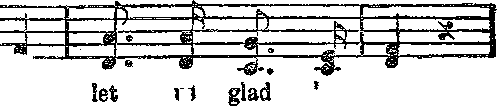
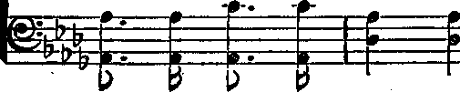
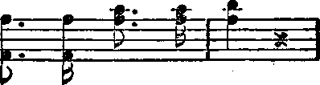

AMERICAN NEWS’
THE LAW
OF LIFE
MESSENGERS
OF PEACE
5$ a copy — $100 a Ye ar ' Canada and ForeignYoantries. $
NEV
VQR.L.D BEGINNING
........ .......--------: .............:■
Labor and Economics
The Tired Business Person ...............
Social’ and Educational
Nuggets of-News on This Side the Water ......... 395
One Thousand. Accidents a Day ............. 395
New York a Cosmopolitan City . .
National Tube Company’s Restaurant . .
Noble Deed, of a Generous Physician
Factory Employes Short-Lived ............. 393
Bowl of Water Starts a Fire .............. 398
Finance—Commerce—Transportation
Items on Bridges and Tunnels ....
Bridges Across the Hudson ............... 389
New York’s Vehicular Tunned ............. 390
When Shall the Bubble Burst? ............. 394
Some Reasons fob the High Price of Coffee ......... 394
Political—Domestic and Foreign
Sequel to Leopold-Loeb Verdict ............. 398
Food-Law Violaters in One Month............397
Free Speech in Cincinnati .......... 399
Agriculture and Husbandry
Insects and Animals .................. 404
Rosa Thoughts .................... 405
Science and Invention
A Colobful Subject .................. 391
Automobile Stopped by Cables ....... ....... 393
Eeligion and Philosophy
Misinstraetion of Children ............... 399
Professed Christians. Belie Christ ............ 399
The Law of Life ................... 40s
Messenceks of Peace ................... 41o
Adtsrtise the King (Song, with Music) ........... 414
Studies in “The Earp of God” .............. 415
Ibrbwwa- every ether Wednesday at 18 Concord Street. Brooklyn, N. Y., u. g, A.. by WOODWORTH, HUDGINGS & MARTIN
OspsrtMB Proprietors Address: IS Cancord, Street, Brooklyn, If. Y-, U.S.A, CLAYTON 7. WOODWORTH „ . . Editor ROBERT J. MARTIN . Bssineas Mssstr® WK. J?. HUDGINGg . . gsa’y and Treas.
Five Cents -A Copy—$1.00 A lBAb Make bmeumis to THIS &QLDSS A&B S’oeeice Ovbtchs : British „ 84 Craves Terrace, Lancaster Gats, London W. 2
Canadian . , K . , . 88-40 Irwin Avenue, Toronto, Ontarie
Australasian . „ , s . . 495 Collins Street, Melbourne, Australia
Sottfit African. ...... ti Leila Street, Capo Town, South Africa
Sntcsrod as second-class matter at Brooklyn, N. Y., wader the Act of March 8. 1S79 crte Golden Age
g-11 ■ "■■ ■ ..... —■ , . , a”— -r "
Volume VI Brooklyn, N.Y., Wednesday, March 25, 1925 Number 144
THE use of bridges is traced back to the
Chinese, who seem to have been the first people to continue the roadway across streams by the use of the arch. There are no bridges among the ruins of ancient Egypt, and there is no mention of bridges in the Scriptures.
The first bridge at Rome built over the Tiber was the Pons Milvius, some parts of which are still in use. This was the structure defended so courageously by Horatius, who kept back the enemy at the far end of the bridge while the citizens destroyed the structure behind him. Horatius finished the job by leaping into the stream and swimming across safely.
The bridges of the Romans are celebrated for their excellence of construction, and hence their durability. The building of a bridge was considered an act of worship. For example, the Emperor Hadrian, then Pontifex Maximus, (Chief Bridge Builder) built the 2Elian bridge in Rome in 134 A. D. It was repaired by Pope Nicholas II and also by Pope Clement IX, both of whom had the same title. Indeed, the Pope is still called the Supreme Pontiff, which means the same thing. Hadrian’s bridge is still in use, now called the Sant’ Angelo.
There are wooden bridges in the United States which are still enduring hard usage after having served faithfully for one hundred and fifty years. The famous Genesee river viaduct at Portage, New York, built in 1824, had ten spans to cover a distance of 800 feet. It was 235 feet high.
There was a magnificent wooden bridge over the Schuylkill at Philadelphia, with a span of 340 feet. This bridge was called the Colossus, and has the record for a large wooden span. Some years ago there was a bridge over the Connecticut river at Bellows Falls, with two wooden spans of 184 feet each.
The highest bridge in the world is the cantilever bridge across the Zambesi river in South Africa, at the site of Victoria Falls. The bridge is 650 feet long and 420 feet in height. The highest bridge in the United States is on the line of the Southern Pacific Railway in Texas, where it crosses the Pecos river at an elevation 321 feet above the stream.
Some of the long bridges of the world are on© in China, across an arm of the Chinese sea, five miles in length; one across the Danube having a length of 12,705 feet; one across Galveston Bay, Texas; one at Tampa, Florida 6 miles long; and the long railway bridge connecting Key West with the mainland.
Artists claim that the most beautiful bridge in the world is the suspension bridge across the Danube at Budapest. The famous London Bridge (one of many which now cross the Thames) was first built in 1176. The structure which now stands on the site was built in 1824. It is at present closed for repairs, the piers having settled slightly. The natives of India, Mexico and Peru have some very interesting structures made of vines and cables, which serve their purposes well.
THE most remarkable bridge is said by bridge engineers to be the Britannia, over the Menai Strait near Bangor, Wales. It was built of wrought iron tubular girders nearly a hundred years ago, in a place where no scaffolding could be used. This made it necessary to assemble the 460-foot spans on shore, and then float them out, and lift them 100 feet into position. This would be a noteworthy engineering achievement even at this day. The work was successfully performed by the great engineer, Robert Stephenson; and the bridge is still in use.
In the colossal Firth of Forth bridge ten miles from Edinburgh, there are 38,000 tons of steel. When it comes to painting the bridge, the same amount is required as would be needed to cover a flat surface of 145 acres. This will give some idea of what a huge task it is to keep this bridge painted. The bridge was built to withstand a wind strain of 56 pounds per square inch, which is double the American requirements. The bridge is rigid under trains going at sixty miles an hour.
The world’s largest cantilever bridge, and one of the most disastrous in toll of lives and money to construct, is the great bridge across the St. Lawrence river near Quebec. The construction of this bridge came perilously close to the limit of engineering ability. While it was building it fell into the river twice, once in 1907 and again in 1916. The first time it went down, eighty lives were lost and 15,000 tons of steel disappeared in the St. Lawrence. The total cost was $24,000,000; but the bridge wras completed, and is an extremely valuable addition to- the means of human intercommunication.
Seagirt, New Jersey, has a wooden military bridge 220 feet long, constructed by the 104th Engineers. In due time the camp was abandoned, and the last step was to be the blowing up of the bridge. It must have been built to stay; for seven heavy charges of TNT had little effect upon it.
Bridges cost much more than formerly. The first bridge across the Connecticut river at Springfield, Massachusetts, cost $36,000. The second one, which used the old piers and abutments, cost $22,000; but the new one just completed, made of reinforced concrete, cost §4,000,000, not counting the value of land taken and damages paid to neighboring property.
The Inaeesgaible Bridge
HE most inaccessible bridge in the world is the suspension bridge at the bottom of the Grand Canyon of the Colorado, nearly a mile and a half below the rim of the chasm. From the edge of one cliff to the edge of another the trail leads fifteen miles from the rim to the river bottom. Along this trail every item that went into the construction of the bridge was carried on mule-back.
The most intense moments of the construction of this bridge were when the cables, one at a time, were carried down. A hundred feet of cable were piled on the back of each of two mules separated by a distance of 300 feet. Between them fifteen iron-nerved mountain climb
ers each carried 20 feet of the cable. The difficulties of their task may be judged from the fact that it required seventeen hours of unbroken labor to carry each section of the cable down the cliff. The bridge, which can be crossed only by mule or on foot, penetrates a country full of wild life and natural wonders hitherto inaccessible. '
The Longest Toll Bridge
HE longest highway toll bridge in the world stretches across Tampa Bay from Tampa to St. Petersburg. It is. six miles long, and shortens the automobile distance between the two cities by a distance of twenty-four miles. The waters of the bay are sufficiently shallow to admit of piers for the bridge, but are too deep for the construction of an ordinary highway. The bridge will accommodate four motor cars abreast. The rates have been fixed by the State at seventy-five cents for one passenger vehicle and driver.
The oddest bridge, or one of the oddest, is at Hastings, Minnesota, where a solution of the problem of bridging the Mississippi without injuring the business section of the town was found by making the bridge terminal in the form of a spiral. Not at all a bad idea, and typically western.
The easiest-built bridge is one at Oregon City, Oregon, where the Willamette river is spanned by a bridge that is 500 feet long, and yet was assembled and put in place all in thirteen hours. The bridge was so perfectly designed, and its units so perfectly made at the bridge-making plant, that every part of the complicated structure fitted to the fraction of an inch.
The longest single span in the world will h® the Golden Gate bridge, at San Francisco, when that structure is completed. Its main span is .to be 4,000 feet long, or almost two and one-half times the longest span now in use. Moreover, it will be at the very considerable height of 210 feet above the water. The piers will each be 1,010 feet high, each taller than th© Eiffel. Tower, and therefore the highest structures in the world. It will take six years to complete the bridge. The cost will be about $25,-000,000. .
The central portion of Missouri is being helped by the construction of numerous high-
way bridges across the treacherous Missouri, a river which has swallowed up more bridges, eaten up more farms, and toppled more towns into the stream than any other- American stream.
Louisville, Kentucky, is agitating the construction of a mammoth $15,000,000 bridge to connect it properly with the Indiana shore. The plan is to use the lower deck for carrying railway and other vehicular traffic and to maintain on the upper deck a permanent display of the products of Louisville and the surrounding cities, towns and country.
e City of Bridges
THE City of Bridges is preeminently New
York city, which does not have one stream to bridge, as is the case with most other great cities, but finds it necessary to fling bridges in every direction; for New York is an island, and the distances that separate it from opposite shores are very considerable, except at the northern end. It is 1600 feet across the East river to the Brooklyn shore, and 3,000 feet to the western shore of the Hudson river.
The earliest proposals to erect a bridge across the East river were made in 1810. The present Brooklyn Bridge was begun in 1870, as a private enterprise of the New York Bridge Company. It was completed in 1883, at a cost of $10,000,000.
The designer of this remarkable bridge, John A. Roebling, died from injuries received while the bridge was in process of building. But his son, Washington A. Roebling, finished the task; and the bridge has paid for itself over and over, every year or so, from that time to this. Two hundred thousand persons pass over the bridge daily. The four cables are each, made of 5,296 small wires, closely bound together.
Since 1922 the Brooklyn Bridge has not admitted any motor driven vehicles. Incorrect reports that it is unsafe have caused many to shun it, so that where 30,000 persons once promenaded upon it daily the number is now only 3,000. But perhaps there are less pedestrians now- than formerly. The question of rebuilding the bridge or tearing it down comes up periodically. It is a beautiful structure.
Besides the Brooklyn Bridge there are now crossing the East river at New York the Manhattan, Williamsburg, Queensboro and Hell Gate 'Bridges, and no less than six tunnels, so that maps of fte city now make Manhattan Island look like the backbone of a comb with the teeth, consisting of a dozen bridges and tunnels, all pointed toward Brooklyn. Every one of these bridges and tunnels has paid for itself time and time again by the increased taxation gained by the increased value of real estate.
The “American Magazine” reports Mr. Gus Lindenthal, who had a hand in the design of the Manhattan, Williamsburg, Queensboro and Hell Gate bridges, as saying,
“It is perfectly possible for an engineer, given enough money, to do practically anything. I could build a bridge across the Atlantic and have the piers on a solid foundation, even though in places the ocean is three miles deep. That bridge could be built 300 feet high on floating, anchored islands, and would be strong enough to carry the heaviest traffic and to resist the biggest gales that have ever blown. There is nothing at all impossible in such a project. But it is not practical, because the cost would run into figures that would look like a modern war debt, and it could not carry enough traffic to pay the legitimate interest on its cost of construction and maintenance.”-
Bridges Across the Hudson
HD HE longest suspended span of any bridge now in use is that of the Bear Mountain Hudson River bridge, which spans the Hudson river at Peekskill. The span is 1632 feet, as against 1600 for the Williamsburg (New York city) bridge, which is next to it in length of suspended span. The cables of the Bear Mountain bridge are 17 inches in diameter, made of 7,252 small wires tightly wrapped together. The Bear Mountain bridge is at present the only highway bridge spanning the Hudson river within forty miles of New York.
Thirty-two miles further up the Hudson is the next bridge, the one at Poughkeepsie; and there is not another until Albany, 154 miles away. The Poughkeepsie bridge is not a success. It was built by a rum-seller, who figured that a bridge at that point would be the short line from the Pennsylvania coal fields to New England, and would sell at a top price to the railroad companies. But the bridge is not strong enough to carry a full train of loaded coal cars. It is in steady use, but considered a failure.
There is much discussion of a gigantic bridge to cross the Hudson river at 57th street, New York city, with a single span of 3,240 feet. This
bridge Avas designed twenty years ago, and was then planned to carry 40,000,000 people annually. The new design is planned to carry 200,000,000. It calls for a structure capable of holding a weight of 800,000,000 pounds. Its cables will be four feet in diameter, its two towers each 400 feet square by 840 feet high. The bridge will be enclosed with rain and moisture proof material, to reduce the expense of painting. '
The bridge is designed to have two decks, with a width of 225 feet on the lower level and 235 feet on the upper one. The lower level would carry twelve railroad tracks. The upper level would have two fifteen-foot promenades, forty feet for trolleys and busses, and a center roadway accommodating sixteen lines of automobiles.
The construction is delayed by reason of the fact that one end of the bridge is in New Jersey and the other in New YoW. It would be possible to have a center pier, but would not be permitted by the government on account of obstructing navagation. The bed of the Hudson river is an old canyon which has become filled with mud 250 to 300 feet deep.
Bridges Versus Tunnels
rpiIE development of machinery and appara-
-L tus for compressing air and driving headings through light or watersoaked soils has enabled the permanent crossing of the Hud-"son at four points, with the assurance that a tunnel can now be built almost anywhere. The same discoveries have assisted in means for constructing’ piers in deep water.
No one is allowed to visit a river tunnel heading without . a physical examination. The pressures increase from one chamber to another, twelve pounds, twenty-four pounds, thirty-six pounds and filially forty-eight pounds per square inch. The men are paid in proportion to the pressure under which they work. The greater the pressure, the shorter the day. The tunnels are driven ahead, about fifteen feet daily. When completed, they are lined with steel and concrete and are safe for all time.
Coming out of compressed air is.'much more, dangerous than going in. If one has been working under forty-eight pounds pressure, decompression from forty-eight to twenty-four pounds can be effected in five minutes; but the decompression from twenty-four pounds to atmospheric pressure requires forty-five minutes. Above twenty-one pounds pressure the men are not permitted to work more than three hours at a shift.
If one comes out of compression too quickly his life is in danger from a disease called "the bends”, the only known remedy for which is to rush the patient back into compressed air and keep him there while the pressure is very slowly reduced to normal. ’
The men that do this dangerous work are roughly called "sand hogs”; but they are the. bravest of the brave, and among the very most valuable members of society. Their lives are constantly in danger. No insurance company will write insurance for them.
Instances are on record where men have been blown through the bulkhead and up through fifty feet of water, and survived to tell the tale. When a tunnel bursts under the pressure, it i; smothered again by scowloads of fire clay deposited upon it. .
New York's Vehicular Tunnel
WHAT may mark an end of the construction of great bridges around New York City is the construction of the Hudson vehicular', tunnel, which has been already bored through and which will be opened for traffic in 1926. One of the problems was to pour into the tunnel enough fresh air to remove the gas fumes from the stream of automobiles tbr i . w y • m.g‘ it. This was figured out, at a cost of $50,000, by the construction of a model tunnel of grounds of the campus of the university of Illinois, and a similar expenditure by Yale rati-versify, for a tunnel at Bruceton.
One drawback to the construction of so many ■ tunnels is that the huge oce
tops of some of the tunnels even now.
New York’s principal bridge designer, I, ae.m Lindenthal. Mr. Lindenthal dees not see the benefit in tunnels that some do. He compares the new Hudson vehicular tunnels with the Manhattan bridge and sums up. the matter in the New York Times as follows:
‘Tt must be considered that the two vehicular tunnels will give accomihodation to only four lanes of traffic; and that the Manhattan Bridge has accommodation for twelve lanes of traffic, not including two sidewalks each ten feet clear. It has, therefore, at least three times, but more nearly four times, the traffic capacity of the two vehicular tunnels. Let us assume that the cost of Manhattan Bridge, literally allowing for same length as the tunnels and on the basis of present prices, would be $42,000,000 (an excessive cost) instead of the $31,000,000 actual cost fifteen years ago. We have, then, the fa< ; that each of the twelve lanes over the Manhattan Bridge would cost $3,500,000, while each of the four lanes of the vehicular tunnel will cost $7,000,000 or twice as much.” ■
Work on the tunnel from Brooklyn to Staten Island proceeds apace. This tunnel will make Staten Island properties immensely valuable. The tunnel under the narrows will take sixty-three months to build and will cost about $27,000,000. The total cost for bringing Brooklyn into tunnel communication with the New Jersey shore via Staten Island is estimated at $60,000,000. This is the plan which the Baltimore & Ohio Kailroad Company hopes sometime to bring to fruition. Its eastern terminus will then be Brooklyn.
Not counting its many great subway systems as tunnels, which, of course, they really are, New York city is the proud owner of the longest tunnel in the world, namely the Shandaken, eighteen miles long, under the Catskill Mountains, which brings the waters from the western side of the mountains into the Ashokan reservoir on the eastern side, for the benefit o. thirsty New York
Some Interesting Railroad Tunnels
THE Simplon tunnel, is 12.3 miles long, connecting the French portion of Switzerland with the Italian city of Milan. It shortens the distance between Milan and London by eighty-four miles, and was completed in 1905 at a cost of $14,000,000.
Next in length is the St. Gotthard tunnel, also in the Alps, 9.3 miles long. Third is the Mont Cenis tunnel, from Modane, France, to Bar-donecchia, Italy, 7.98 miles long. Fourth is the Albert tunnel, 6.36 miles long. Fifth is the Moffat tunnel, near Denver, 6.04 miles long; and sixth is the Otira, New Zealand, tunnel 5.3 miles long.
The Moffat tunnel is not yet completed. When it is, it will mean the passing of what is described as the most picturesque railroad station in the world; namely Corona, 10,660 feet above sea level, the highest point in the world where there is a standard guage railway. Even in midsummer, in the neighborhood of Corona the railroad winds in and out between high banks of snow.
The Moffat tunnel will shorten the transcontinental line between New York and San Francisco by 178 miles and will be used by several of the transcontinental railways. It makes accessible new coal and oil deposits, timber supplies, etc., and is being financed by the State of Colorado. It is named after D. H. Moffat, its original projector.
Tunnels that are from time to time seriously considered are one under the British Channel, connecting Dover with Calais, and one under the straits of Gibraltar twenty-four miles long, connecting Europe and Africa. Chicago’s big banks are connected by tunnels, to keep bandits from holding up their messengers on the streets. An Italian-American newspaper man is connecting the Italian cities of Pisa and Lucca by a $250,000 tunnel under the Pisan mountain. The English Duke of Portland has expended $15,000,000 building tunnels on his estate. This has given rise to the report that he is a leper.
THERE is a sign in front of an old established business house in Brooklyn which reads: .
“We dye to live while others live to die.
The longer we live, the better we dye;
The longer we dye, the better we live.
Don’t dye yourself. We’ll dye for you.”
Until the year 1856 dyers depended entirely upon natural products, and some of the best of the dyes still come from these sources. The Tyrian purple which made Tyre the ancient center of the dyeing industry, and which established purple as the color of royalty, was and still is made from a fluid secreted by a shellfish.
Indigo, obtained from the indigo-plant, is one of the most important of the dyes. Fifty shades of blue are produced from it. The shell of the pomegranate yields thirty shades of yellow. There is a seaweed which yields a rich dye. Gallnuts, produced on the leaves and twigs of oak trees by the punctures of certain insects, produce valuable dyestuffs.
In the year 1160, in the city of Jerusalem, the art of dyeing was so much of a secret that all of the 200 Jews then residing in that city were employed in wool dyeing, the trade being wholly in their hands. There was a time during the dark ages when the art would have perished altogether except that the Jews handed the secrets down from, one generation to another. In those days learning of every sort was discouraged.
But it was in 1856 that the modern dyeing’ industry wrns born. In that year, in the city of London, Dr. William Henry Perkin, then a youth of eighteen, succeeded in taking from coal tar a dye which he called mauve. At once the thick, black liquid which, was then considered a waste product in the manufacture of illuminating gas, became valuable. A French chemist estimates that fourteen thousand shades and tints can now be produced from coal-tar colors.
Why Dyeing is Difficult
HpHE reason why dying always lias been so difficult is that very few dyes ■ will stick to the fabric to which they are applied. Cotton, especially, is very much this way. The dyes' will color it; but when washed, the colors tend to come out unless fixed by what is called a mordant. All the dyes from natural sources, are used in connection with mordants in dyeing cotton. A certain branch of the coal-tar dyes (azoes) can be applied to cotton without a mordant, and produce brilliant and lasting colors.
The “Textile World Journal” points out that in the dyeing industry there are about 700 dyes of commercial importance, not counting mixtures or combinations. The dyer is compelled to make such use of these, and of their mordants, as to dye all-classes of goods so that the colors will not rub off on a clean white cloth, so that they will not lose brilliancy when exposed to light or to steam, or when the burrs and fragments of vegetable fibers are burned out of the cloth, or when immersed in water hot or cold, or with washing soda dissolved in it, or when placed under a hot iron. As a matter of fact all dyed goods will fade in time.
The manufacture and use of dyes is not only a difficult matter but a dangerous one. It happens that a widely-used chrome dye, made in very large quantities, dried, ground, packed and shipped freely everywhere, is of such a quick-burning nature as to render it more dangerous than some of the violent explosives. Many of the dyes are closely related to the explosives.
In a. mild case of anilin poisoning in. a dye factory the workman experiences a sense of fatigue and lassitude, his head aches, his eyes become dull, his gait lags, his step has lost all elasticity, his speech is slow and hesitating, his face is grey, his lips bluish, his appetite is completely lost, and he has the appearance of a man slightly intoxicated. The poisoning comes on unexpectedly, and the workmen watch each other to note when the lips become blue. When this takes place, they must leave the anilins for a time. If they attempt to use liquor, they become violently ill at once.
Haw Germany Became the Worldfs Dyemdker A LTHOUGH the discovery of coal-tar dyes was the work of an Englishman, yet the English paid little attention to Dr. Peridn’s discoveries. But a Gerrrc nai'w W learned the secrets obtained from nature by Dr. Perkin, went post haste to Berlin, and there Began what has been one of Germany’s most important enterprises.
The erection of dye factories in had somewhat to do with the inauguration. of the World War. The chemists soon learned that dyestuffs and explosives are closely re-, lated. and when the war broke out, the chemical factories were turned over night into explosive factories. Subsequently poison gas was made in the same establishments.
It is claimed for the German dye factories that they are the cleanest in the world. No fluids are allowed to run wild or drip or spill anywhere, the floors are clean, and the vapors and gases and even the steam are carried oft by fume pipes which are connected with the air exhaust system. The passages between buildings and the roadways through the grounds of these factories are kept scrupulously clean.
Germany lias managed her dye industries in such away as to make them extremely profitable. For instance, the dividend in the largest German plant for the year 1922 was 300 percent, which means that the plant paid for itself three times over in one year. Moreover, the plant was still there at the end of the year, probably in better shape than ever.
Wrestling with this admitted superiority of the German dye factories the New York World four.months apart gave vent to the two interesting observations which follow:
“You can turn a dye works over night into an explosive factory. So long as Germany maintains a dye monopoly or is in a position where she can regain it, she has_. an armament for chemical warfare superior to that of any other nation. So long as she retains it in full activity, she will be dangerously armed, even. if we destroy every gun, every tank, every plane, every rifle, every ship in the German Empire.” '
“As long as Germany can produce a dye and sell it for forty or fifty cents and the same dye cannot ba made in this country except at a figure from five to twenty times more, it is a point of economy for this country to let Germany make the dyes while we turn our attention to something practical.”
We are not blaming the World for stepping on its own feet. It is easy to do.
Hais America Tried t<s Unhorse Germany
HE devious means by which the American dye trust endeavored to unhorse the German trust do not appeal to us, and there is not much pleasure in telling them. But unpleasant things have to be told sometimes, and this is admittedly one of the most shameful things that ever happened in. America.
. Before the war private citizens of Germany had paid for 5,700 dye patents; the United States patent office had taken the money and stood as guardian of tills trust. During the war Mitchell Palmer was made custodian of these patents. When the war was over he became Attorney General, and Mr. Francis P. Garvan became custodian of the patents.
By and with the advice and consent of President Wilson and Attorney General Palmer, the patents, worth it is estimated not less than $40,000,000, were sold at private sale to a committee, the head of which was Mr. Garvan. This committee is now called the Chemical Foundation, popularly known as the American dye trust. The price paid for the 5,700 patents was $271,000, which the court has admitted was confiscatory.
Under the able and honest administration of Attorney General Harlan F. Stone, the Government has brought suit against the Chemical Foundation, Inc.; and although one court has decided against the Government’s contention, and even praises the Foundation for its use of the patents for the benefit of the American people, we take space to express the earnest wish that the appeal now being heard will result in the Government’s victory. Honesty defeated is a thousand times more honorable than dishonesty triumphant.
But the humiliating thing, after seizing the patents was that the Americans who seized them could not then make as good dyes as had hitherto been made in Germany; and after loading the American markets up with most abominably dyed fabrics, it was finally necessary to import two German chemists at $25,000 each per year in order to produce the desired results.
As a result of the German monopoly being denied access to American markets and the American dyes costing so much more, it was claimed four years ago that the same lot of hosiery which could previously have been dyed for $1.80 would then cost $15. The total dyes produced in the United States in 1914 were 6,619,729 lbs.; in 1922 they were 64,632,187 lbs.
The Dge Bootlegger
:"pHE bootlegging industry in America goes G- on apace. According to all reports we have the liquor bootlegger, the narcotic bootlegger, the immigration bootlegger; and we have also the dye bootlegger. It is claimed that most of the bootleg dyes come from Italy, but that some of them come from France and Belgium.
Every country to which Germany is sending dyes in part payment of war reparations has signed an agreement not to allow such dyes to pass their borders: but they do pass, and that is what gives them the name of bootleg dyes. They are in great demand; and the man who can, by some hook or crook, get' a barrel of the genuine German .article into America makes a fortune so it is said. A barrel which cost $1,000 is said to have sold in New York for $30,000.
The Americans are gradually finding out the German secrets. In 1920 there "were 500 varieties of dyestuffs which the American could not
394 manufacture so well as could the Germans. 'After the lapse of three years this number was said to have been reduced to fifty, with fresh discoveries of frequent occurrence.
Recent Steps in Dye Manufacture
RECENT discovery of a British gentlemen, Professor A. G. Green, seems important. In the dyeing of the mixtures of cotton and fiber silk he has developed a method which enables him to dye the component threads differently, so that the cotton in the finished fabric is of one color while the artificial silk is of a quite a different one.
A new device for testing the relative fading of dyes makes it possible to determine as much information on this line in one hour as heretofore required a full week of June sunlight.
Dr. Vartain K. Ostigian, of New Orleans, La., has discovered a method of so feeding silk worms that their threads are naturally and permanently dyed in any one of eighteen shades. The total cost of the dyes in an average suit of clothes is set at about sixty-five cents. Dyes are used to some extent in medicine and surgery.
When Shall the Bubble Burst?
THE only method by which our governments permit the issuing and the circulating of money is through the banks, which loan it to the people, except the little that is actually mined from the gold fields. Therefore practically all the money in circulation is borrowed money.
Thus the world must pay back to the banks, year by year, in bank money, all they have borrowed, plus the six percent interest; actually more than what the banks have put into circulation. Therefore the people, regardless of what they can produce or what they have as natural resources, are deeper and deeper in
By George Colwell (Canada)
debt to the banks as the years follow each other.
Even the governments themselves in undertaking any public works, borrow the paper (used as money) from the bankers for the purpose. Thus the whole world, the governments and their people, year by year, sink deeper and deeper into the mire of debt and usury.
We have today such an enormous debt on the world that no man or men could even estimate. Like a snowball, accumulating as it rolls down a mountainside, the debts multiply, multiply, multiply, until the gigantic snowball is smashed in pieces!
AS A rule the Santos or Southern Brazil coffee district produces a little less than one-half the coffee supply of the world, the Rio or Northern Brazil coffee district produces about onesixth the coffee supply of the world; and the remainder, the “mild” coffees, come from elsewhere.
The Santos crop this past season, instead of Jieing about 10,000,000 bags of 132 pounds each, as usual, was only about 6,000,000 bags. But besides the smaller crop Brazil was afflicted with a revolution. How tills reacted upon the available coffee supply is explained in a letter to us by the Joint Coffee Trade Publicity Committee of the United States, which is worldng toward the end of a steady supply of coffee at prices that will enable them to obtain and hold their trade:
“First of all, a bit of history: The very marked rise in coffee prices took place after the Brazilian revolt, which occurred about the first of last July. As you are no doubt aware, this tied up commerce completely from the interior to ports so that as a result of this revolution only 146,000 bags of coffee went from Sao Paulo, the big dispatching point of the interior, to the port of Santos during July instead of a normal number of about 1,050,000 bags, which but for the revolution would have been shipped to the port. Also because of the military activities, exports from Santos were interrupted from, approximately July 15th until July 30th, no British or American steamers making that port during the disturbance.
“On August 1st the Brazilian Government set aside the previous restriction at Santos of 35,000 bags per day, and raised it to 50,000 in order to make up for the deficiency in receipts which had been caused by the revolution. We were advised by our Government representatives that the railroads, owing to the congestion resulting from heavy transportation requirements subsequent to the cessation of hostilities, were not able to carry increased amounts of coffee shipments; and it was not until October 26th that the deficiency of coffee shipments from the interior to port had been made up to an average of 35,000 bags a day. From October 25th to December 6th the restrictions on interior shipments were 35,000 bags. On December 6th these were further restricted to 30,000 bags, and to date we have had no information as to any change in this number.”
With their letter to us the Coffee Trade Publicity Committee enclosed an article from The 'Annalist which gives further details of interest:
“The present system of control of shipments of coffee by the Brazilian Government follows three progressive schemes for valorization. About seventy percent of the income of the Brazilian Government comes from its exports of coffee; and, control of these in such a way as to keep the price at a sufficiently high level is a matter of chief importance in the Government’s financial program. To understand the present system it is necessary to know that ‘Santos’ coffee, so called from the fact that it is exported from the port of Santos, is produced in the Brazilian Province of Sao Paulo. The railroad outlet for this coffee is by a single line from the city of Sao Paulo (which is the capital of the province), to the seaport of Santos, this line being the bottle neck of the coffee movement. The present Government regulation restricts shipments of coffee for export from Sao Paulo to Santos to 35,000 bags a day. At various points in the interior of the Province are warehouses in which coffee producers may store their coffee in the usual warehouse fashion, financing their crops through loans from the banks on warehouse receipts. The maximum permitted shipment of 35,000 bags is made up half of coffee drawn from these interior storehouses and half from coffee shipped directly from plantations. -The warehouse supply is subject to peculiar conditions, for a sort of seniority system for shipments in and out prevails. A planter, for instance, who warehouses a hundred bags of coffee today cannot ship out that coffee tomorrow, but must wait until planters who have deposited in advance of him have exercised their option whether to ship or not. This serves in some degree to retard and, also, to even the flow of coffee from the warehouses, though it has no immediate effect on the present shortage; or certainly on the overcoming of that shortage.”
Nuggets of News on this Side the Water
[Radiocast, with other items, from Watchtower WBBR on a wave length of 272.6 meters, by the Editor]
Union Wages Highest Ever
HE wages of union labor are now the highest they have ever been. "With the exception of 1922, the year of the great deflation of labor, it may be said that union wages have constantly risen since 1919, until they are now almost fifty percent greater than at that time. The engineers on the Southern Pacific have just received an increase totaling $500,000 per year.
One Thousand Accidents a Dag
TN New York State the average number of in* dustrial accidents is about one thousand a day. Formerly this army of workers could get relief only by suing their employers and then waiting about a year before the eases camo up in court. Now hearings on these cases are being held regularly in sixty-eight cities of the state, with a minimum of delay.
NCgrto Education at Tuskegee ' ■ ■
TUSKEGEE Institute started in 1881 with fifteen pupils and two instructors in a one-room shanty. Today it has 2,640 students and 125 buildings. The students construct their own buildings in connection with the courses in carpentry, bricklaying, plastering, painting, plumbing and steamfitting. The women students learn housekeeping in the same way. The Institute now has 2,111 acres of land attached.
Getting It Down Fine
A, STUDENT of Columbia University has just x distinguished himself by writing 600 words on a space 27-32 by 31-32 on an inch, on the back of a postage stamp. He regards this as superior to the work of Professor Durso, who wrote 11,000 words on the back of an Italian postcard. The ratio is as 734 to 575 words per square inch.
New York a Cosmopolitan Citg
EW YORK city has' 1,600,000 Jews, 400,000 Italians and as many more of Italian descent, with about 500,000 each of those of Irish and of German descent. Seventy-seven percent of the population of the city is of foreign birth or foreign parentage. Approximately twoi million were actually born on the other side of the world.
MB. B. C. Forbes, in the New York American, points ont the interesting fact that America’s greatest philanthropists along educational lines, John D. Bockefeller, Andrew Carnegie, H. C. Frick, George Eastman, Milton S. Hershey, James B. Duke, Bussell Sage, Henry Phipps, Benjamin Altman, George F. Baker, August Hecksher, James A. Patten, J. P. Morgan, and Henry Ford were or are all men of limited education, not one of them having had a college diploma.
A Plucky 17-Year-Old Girl
IN Brooklyn recently a seventeen-year-old girl stenographer was run down by a street-car, and in some way slipped past the safety fender, her body lodging between the fender and the forward trucks of the car. Though the blood was streaming down her face, she calmly directed the work of rescue, telling where the jacks should be placed to lift the car. After twenty-five minutes, during which she was the calmest one in the crowd, she was rushed to a hospital, and there found to be not seriously injured. Her present name, young man, Miss Mildred Dight.
A Wise Philadelphia Judge
A Philadelphia judge with a close approach to the wisdom of Solomon permitted a woman who had been beaten by a drunken husband off and on for thirty years to pass sentence upon her unworthy spouse. The woman started off by telling the man that she ought to send him up for a year. He begged for mercy, took the pledge, promised to pay his wife $14 a week out of his $22 salary, and was placed on probation for a year. The woman was not a half bad judge either.
Mr. Ford’s Enormous Business
ONLY a few years ago Henry Ford was a poor man, a struggling inventor. His peculiarly successful methods of manufacture and salesmanship have given him the greatest personal enterprise ever known. The making of coke for his own furnaces and of plate glass for his own cars, with other similar items, entirely outside of automobile manufacture proper, brings in a revenue of $13,000,000 per year. $4,000,000 of this amount is from the sale of scrap iron and waste.
MB. Ford tells the truth when he says that “if losing a false wisdom and finding a new beginning of learning is progress, then we may say that the world has progressed. Its cocksureness has gone. Its old principles are disproved by experience. It sits amid the wreck of all its falsities. And no time is more full of hope than the time that knows the wreck of falsities.”
Automobile Stopped by Cables
ANEW device, developed at Bacine, Wisconsin, swings a series of whiplashes across the road thirty seconds before a train is due to reach the crossing. At the same time, yielding steel cables drop into position across the road, which will stop an automobile from reaching the rails and without injury, even though the auto be travelling at sixty miles per hour. -
Steel Trust’s Gigantic System
IN ITS safety, sanitation and welfare bureau alone the United States Steel Corporation maintains 28,451 dwellings, 33 schools, 40 clubs, 66 restaurants, 283 rest rooms, 175 playgrounds, 19 swimming pools, 125 athletic fields, 112 tennis courts, 21 band stands, 29 model homes, 461 water systems, 13 hospitals, 389 emergency stations, and 66 training stations for the rendering of first aid. Accidents of all kinds have been greatly reduced.
National Tube Company’s Restaurant
THE National Tube Company, a subsidiary of the Steel Trust, serves its employes four meals daily. Boast beef, roast pork, scrambled eggs or chili con came, with bread, butter, potatoes and gravy are 20c; tomatoes 5c; beets 5c: beans 5c; pie, pudding or cake 7c; coffee or milk 5c; ice-cream 4c. This appeals to us as exceedingly wise and kind.
Sequel to Leopold-Loeb Verdict
THE Divine law provides the death penalty for murderers. The young college-bred millionaire assassins of Chicago were given life sentences, and the judge who sentenced them retired immediately from the bench. During the next succeeding month Chicago had the biggest murder orgy in history, and is even now averaging a murder a day and a conviction a year.
The Rural Police Humbug
THE same powers that saddled the rural police humbug upon Pennsylvania, and that has so often overridden the rights of the citizens of Western Pennsylvania, are trying to have the same kind of police force installed in Illinois. There is absolutely no need for it and no use for it, except to serve as an arm of force to override and overawe workingmen. .
Three Million Dollars Stolen from Indians
THREE million dollars stolen from the Indians, with the knowledge and consent of the state courts of Oklahoma, is the charge made in that state by Hugh Murphy, a former Okmulgee county judge. Mr. Murphy made these charges before a congressional committee, alleging that they took place four years ago.
Borah Would Outlaw War
Senator Borah, chairman of the senate committee on foreign affairs, though opposed to the League of Nations, is nevertheless in favor of a world court, clothed with jurisdiction to hear and determine all controversies involving international law, with the definite understanding that war shall be declared a crime by international law. In other words, says Mr. Borah: “If war comes, it must be without the sanction of law, but in violation of it, as piracy, or- slavery, or peonage, or murder.”
Food-Law Violators in One Month
IN ONE month recently the Government levied fines up to $1,000 and declared heavy business penalties on some of our leading patriots for the adulteration of eggs, cocqa, tomatoes, salmon, catsup, chestnuts, and coal-tar colors, the adulteration and misbranding of tuna, fish, butter, salmon, and lemon extract, and the misbranding of olive oil, salad oil, tomatoes and cottonseed-meal.
Remarkable Escape from Death
IN Indiana, on Christmas night, the Knickerbocker Special, one of the world’s fastest trains, demolished an automobile, killing one and injuring several of the occupants. One of the occupants, a woman, landed on the pilot of the engine, and was carried on it for twelve miles until, becoming numb with the intense cold, she rolled off into the snow, safe and sound, as the train sped on to its destination.
Walnuts Go Like Hot Cakes
CALIFORNIA keeps increasing her output of walnuts, but these are gone as soon as they come into the market. The output for 1924 was 48,180,000 pounds, valued at $14,000,000. As soon as the nuts were ready for sale they were taken in forty-eight hours, and orders for hundreds of thousands of pounds were declined. The yield in 1924 was not quite so good as the. year previous.
Radio Reunites a Family
WONDERFUL things are happening in these days. In Chicago a girl was found in a railway station, suffering from amnesia—> loss of memory. She was taken to a hospital. As a desperate expedient she was induced to send out an appeal by radio to try to help her establish her identity. Her aunt in St. Louis heard the appeal, and came and got her. The girl’s memory was at once restored by the sight of her relative.
A New Source of Lumber
qpllE new fibre lumber made from the waste -®- of sugar-cane has now been on the market only three years; but the product is so very desirable, both as respects insulating qualities and structural strength, that the demand is unlimited. At present a mill in Chicago, according to a dealer in the product, is turning out eighty-four miles of the material daily. It is used for almost every purpose for which other lumber is used. © .
Decreased Death Rate
ONE of the great insurance companies, Metropolitan Life, states that its experience for 1924 makes that year the most healthful in history. The death rate for all causes among its fifteen million policjdiolders was about six percent less than in that of any previous year. Organic heart disease is' now the leading cause of death. Automobile deaths increase.
Noble Deed of a Generous Physician
IN STANFORD, Kentucky, this past Christmas, Dr. J. F. Peyton, a surgeon in the Union Army during the Civil War, and still in active practice after sixty-five years of faithfulservice of his community, burned his account books, containing claims of $80,000 against his patients, and announced that henceforth his time will be devoted to charity practice.
Factory Employes Short-Lived
THE Metropolitan Life Insurance Company, from the mass of statistics obtained from a study of its fifteen million policies, has gained the interesting information that the life of the average industrial worker is eight years less than the life of the average office worker. It is believed that this difference is largely due to the longer hours and heavier tasks imposed.
Bubonic Plague Breaks Out Again
BUBONIC plague has broken out again. In
Los Angeles the disease sprang up very quickly, and there was a large death-rate before it was placed under control. In New Orleans the disease was detected in two vessels from the Orient, and now every vessel that comes into America through Mediterranean ports in viewed with suspicion. The pilgrimages to Rome may spread the plague throughout the world.
ON DECEMBER 27th, about the time we
Easterners were looking in the bottom end of the thermometer for the top end of the mercury, along comes a despatch from Olympia, Washington, where it appears that a gardener celebrated Christmas by exhibiting a bed of Easter lilies growing in the open. It is hard for Easterners to realize that the Pacific Coast northwest is so balmy.
IN ITS Real Estate section the New York American compares New York City to the tower of Babel, pointing out that every year the growth of the city is such as to add $500,000,000 to the value of its realty. But the American makes only incidental reference to the fact that as the tower of Babel became more and more imposing, it was nearer and nearer its doom.
How Much of It Have You?
THE Census Bureau reports that if all the wealth in the country was divided evenly, each person would have real estate worth $1,417; clothing, furniture and vehicles worth $362; manufactured products worth $258; tax exempt property worth $186; railroads worth $181; machinery and tools worth $143; public utilities of a like amount; live stock $53; agricultural products $50; gold and silver $39; total $2,916.
Bowl of Water Starts a Fire
NEWARK, N. J., has had the unusual experience of having a fire started by a bowl of water. The water was in a goldfish bowl; the bowl was in the window; the sun shone in, and focused through the bowl upon the cane seat of a chair. It was too much for the cane. The chair ignited, and two fire companies came and put out the conflagration.
Hard to Lose Anything -
TT IS hard to lose anything around New York so that it will stay lost. In 1830 a man by the name of Van Rensselaer loaded a buggy with art treasures, and took a ferry boat for New Jersey. The ferry boat burned to the water’s edge. The man escaped, but his art treasures went to the bottom. Two miles down stream, a century later, a dredge brought one of these art treasures to light—a head of Augustus Caesar; and it is now again on shore safe and sound.
Ice Sixteen Feet Thick
NIAGARA river, at the time this item is written, is filled with an ice jam sixteen feet thick, reaching all the way from the Falls to Lake Ontario, a distance of about ten miles.
Trinity Parish’s $5,000,000
THAT As-It-Were benevolent aggregation known as Trinity Church Corporation, sometimes feelingly referred to as the worst landlord in New York, has just let a certain skyscraper for a term of years for $5,000,000, with the understanding that eighty-four years from now the corporation shall have the building returned to them. If at that time there is any Trinity Corporation in existence to receive the returned building, then the Lord has not spoken by us.
What They Need in Poughkeepsie
T) OUGHKEEPSIE has got beyond needing the truth, or needing the holy spirit, or even needing wisdom. But it knows now what it does need. We have before us an appeal of the First German Evangelical Lutheran Church of that city, in which, under the heading “Money Talks” Bev. Martin J. Lorenz, pastor, says: “You know that our church’s greatest visible need is money.”
Baptist Ministers Operate Still
DESPATCH from Richmond reports that two prohibition officers in Virginia recently arrested two Baptist ministers on the charge of operating a still. The report states that at the time of the arrest one of the men was engaged in writing a sermon. What with bad theology, spiritism, and “hootch” the clergy seem to be badly tangled on the subject of “spirits”.
Misinstructing the Children
HE Presbyterian Committee of Publications, Richmond, Va., publishes a shorter catechism containing the following questions and answers, every one of which is erroneous and heretical:
Q. In how many persons does this one God exist? A. In three persons,
Q. What are they? A. The Father, the Son, and the Holy Ghost.
Q. Where is God? A. God is everywhere.
Q. What did God give Adam and Eve besides bodies? A.’He gave them souls that could never die.
Q. Have you a soul as well as a body? A. Yes; I have a soul that can never die.
Q. Why should infants be baptized? A. Because they have a sinful nature and need a • Savior.
Q. What becomes of men at death? A. The body returns to dust, and the soul goes into the world of spirits. Q. What is hell ? , A- A place of dreadful and endless torment.
How can we expect the children to know the truth or to tell it, when they grow up, if their parents persist in teaching them things proven to be untrue—the false theology of the dark ages ?
But. Waking Up, Too . ■
SPEAKER at the Presbyterian National Conference in Chicago has raised this question :
“Is there no better hope than that each nation should maintain unceasingly military armaments at the utmost peak of efficiency, should load its suffering people with unbearable taxes, should have every plant a unit of military production, every business man a potential soldier, every woman prepared to don khaki as a nurse or purveyor of doughnuts, coffee and cigarettes, every able-bodied youth training to step to the camp at the first roll of the drum? Then God pity.our grandchildren.”
Professed Christians Belie Christ
HE Union Star, Brookneal, Virginia, says in its editorial columns:

“Go where you may and you find the professed followers of the Christ involved in jealousies, bickerings, chicanery, dishonest dealings with each other, selfishness, hatreds, retaliations, backbiting, exploitation of their fellow’s, bitter intolerance, sometimes actual persecution of those who do not accept our particular variation of faith and creed, all of which are directly contrary to the Sermon on the Mount; contradictory to the Golden Rule; contrary to the great lesson expounded in the Parable of the Good Samaritan; contradictory to tha great fundamentals of all Christian life and conduct laid down in the words of Christ himself.”
Free Speech in Cincinnati
THE Cincinnati Commercial Tribune of Monday, January 19th, gives a full account of a great outrage against the constitutional right of free speech, which occurred in that city on the previous day. In the Odd Fellows Hall at Norwood, a suburb, Helen S. Jackson, a Protestant, was lecturing to a refined, law-abiding, intelligent audience which had first taken the precaution to ask the police department to protect them in their enjoyment of the right of free speech guaranteed by the Constitution.
A Roman Catholic priest, John F. Hickey, thought Miss Jackson, an escaped nun, would say something uncomplimentary to the Roman Catholic church. He went to the mayor and chief of police; and against every principle of American liberty and even decency, the hall was invaded, a tear bomb was set off, a. panic ensued, seven windows were broken, the. hall was badly damaged, men and women were seriously injured by leaping from the second story windows, and as a crowning act of infamy the woman who had requested police protection was arrested charged with inciting a riot. Nothing was done to the priest who brought about the act of official anarchy. ‘ More than a hundred Protestants followed the woman to police headquarters, demanding her release.
TWENTY , years ago, if I had been writing this article, my title would most certainly have been, “The Tired Business Man”; but man no longer bears alone the symptoms of office fag. I know; for I am a. business woman, and sometimes I am tired, too.
“My husband,” said a little woman, as her dark eyes filled with tears, “My husband is so cross when he comes home at night that I simply do not know what to do with him.” Alack the May, when a ,wife, does not know what to do with her husband when he comes home from the office, cross! Usually the first tendency on the part of the homekeeper is to resent his attitude. All day long cooped up in the house, slaving for him and his children, while he is down town among the hustle and excitement, sitting in his office, handling big things—oh! it is to weep! . Little woman, before you were married, did you ever have to work for a living? I thought not; and if you did, you have forgotten your* experience. The Bible says: “Think evil of no man”; “Judge not, that ye be not judged.” If these two rules were applied in dealing with those who go out into the world to work, it would no doubt enable some housekeepers to avoid much of the injustice of which they now are guilty. Perhaps it will help us to obey the Word if we consider a few of the trials of the tired (and admittedly sometimes cross) business person.
First of all, let me say that I believe no one in the world has work that is quite so important as that of the home-maker. Nowhere is there work that calls for more love, patience, tact, sympathy, intuition, efficiency and executive ability. Nowhere is there a job that has a more potent and direct influence upon the human race than this job which the housekeeper has, and which she too often regards merely as a monotonous “waiting upon a hungry man and a lot of children 'who get dirty as soon as 'washed.” Housewives, I beg of you, see yourselves as the business person sees you—the one best reason for keeping the wheels of business turning ; the central coal at which the fires of courage and enthusiasm must be lit; the (to use a military term) base of supplies for physical and mental needs; and if it sometimes seems that your worker’s salary is very small, his progress slow and his disposition impossible, remember:
Person (Contributed) .
“Man’s Inhumanity to Man”
r\UT in the world to which your workers go people are like wolves in their tendency to hunt in packs composed of members of equal strength, and to tear to pieces any one of their number who becomes somewhat weakened. They get together so that they can watch one another, restrict competition, and obtain a higher price for their wares than they ought to get.
To such an employer, then, the humble applicant for a job must come. “Show me what you can do, and I’ll pay you what you are worth,” says the Big Gun. What he really means may be: “'Let me try you out. Let me see how much you will lie and steal and deceive others for our financial benefit while you remain strictly honest in your dealings with this company.” It is just like asking someone to walk backwards and forwards at the same time.
If your worker is strictly honest, he will have a hard time to gain and keep a footing in the business world. If he is not, the accumulated burden of a consciousness of dishonorable deeds committed will weary him as much as if he tried to be honest and get ahead anyway.
Frequently an employe works very hard, trusting for a square deal from his company; and at the end of several years of splendid effort, his work still unrewarded by a raise in salary, he quits and the employer has the benefit of all these years of good work.
There are even employers mean enough actually to figure on this tendency in a good worker. They get the most they can out of one, but are unwilling to pay enough to keep him permanently. So the weary grind goes on; and the employe has no assurance that the next job will not treat him the same way.
Salesmen who work on a commission have the rawest deal of all. What with an oversold market and frequent harsh rebuffs, their life is not of the pleasantest; and they should be highly paid. Yet usually a salesman "who wants all the commission that is due him must be blessed with two or three senses more than the ordinary five.
He has hardly any way of knowing about repeat orders when they are sent in direct, and sometimes the office will not let him see the books. Not content with hogging commissions that do not belong to them, some companies would rather let a good salesman go. than to
give him the commission he lias earned on a large order.
Such an instance came to my attention very recently. A salesman for a. Chicago firm came to our city, and after much effort finally landed an order for his product at the rate of two carloads every week for six weeks. Straightway his company fell to bickering with him. According to them his work had not won the order. The sales effort had been made from the home office, etc.; and so persistent and humiliating were they that the salesman was forced to quit in order to retain his self-respect. Coldly do such firms figure it out. It is a dollars-and-cents proposition with them; justice and the human factor do not enter into their calculations.
The salesman was in our office talking about the matter with one of our men, and in leaving he said: “Well, I’ll be more careful in my next position; one has to protect himself in this jungle.” Rather a libel of the jungle, it seems to me. Is it any wonder that after such an experience a man comes home in a temper, especially when he knows that another job is hard to get and that his loved ones need what he can earn?
Then there is the other side of it. If your bread-winner is an employer of labor his position is not so easy, either. Turn your back for a few moments on even the best class of general office help; and the chances are excellent that the people you would gladly trust will “stall” unmercifully, and if the output of the department is not what it should be the man or woman in charge gets the blame from the higher-ups.
The department or office manager is in a difficult position, too. On the one hand is the employer, on the other the employed, figuratively and Scripturally, “between the devil and the deep blue sea”; for the Bible tells us that the financiers are in league with Satan, and it speaks of the restless peoples as “the sea and the waves”.
Any one who has had experience with modern girls or young men will agree with me when I state sincerely and without exaggeration that the anarchy and selfishness among the employed is appalling; and anyone who has had experience with the modern employer will agree with me when I say the same of him. It is hard to say where this thing started. (Which was first, the chicken or the egg?) But as long as the clergy continue to preach about literature and economics instead of preaching “Christ, the power of God and the wisdom of God,” which would teach people to love one another, the poor office manager must wrestle with the horns of the dilemma as best he can.
Theft among employes is common. They steal time, coming in day after day from five to thirty minutes late; they steal writing paper, pencils, carbon paper, rubber bands, stamps. Indeed, one very large firm allows in their budget five hundred dollars a month for petty thefts which they can not prevent.
Even among business partners, apparently friends, there is the constant necessity of guarding against cheating; the miserable fact of knowing that it exists and of having to bear it or lose all; the- tendency of one or the other to shirk and still claim his full share of the profits. All this is nerve-wrecking, and yet so common as to be part of the daily business routine.
Besides fraud' from within there is fraud from without. Debtors are slow’ pay, or no pay. Customers obtain goods, and then complain that they are worthless in order to put off payment; and if they are pressed or forced to pay, they do their worst to destroy the reputation of the manufacturer. •
. Supply houses and producers of raw7 material like to send in second-rate or worthless stuff; and carload shipments are very, very rarely up to sample. I would almost say never, but I am trying to do injustice to none. A grain broker tells mo that he discounts grain samples ten percent; and he has a fair idea of the quality of the car. In other words, dishonesty is so common that it is a standard basis for estimating values.
This universal dishonesty hardens and sours the business person. It makes him pessimistic and brings him to the dinner table at night with heavy lines in his face and a sarcastic laugh that makes you shiver, because the children you have been dealing with all day are not yet wise in the wrnys of the world and your confidence in human goodness is not so sorely tried.
0 banks and churches, with your proud talk of “business ethics” and big men “who play the game squarely”, I challenge you to prove that this squareness does not consist in planting oneself squarely upon the rights of others and sitting there until, the victim’s business life is extinct !
Excitement '
HERE are tense moments in the business world, too tense. There are big deals involving great sums of money, much planning, much hard work, much high hope, and sharp and bitter disappointment when a deal falls through or an order is lost. Remember: The business person is not working so much for himself as for those cherished ones dependent upon him; and when loss comes, it is great in proportion to his ambition for them. I believe that it is this very fact that makes the struggle so savage.
“Seek ye first the kingdom of God, and his righteousness; and all these things [life’s daily necessities] shall be added unto you,” said Jesus. But the D. D.’s cannot tell this to the business person in such manner as to make him believe it; for the Reverend Doctor is so manifestly out for the “long green” himself that his actions belie his words. If the business person could take the Bible for his guide, the struggle would not be so fierce and desperate nor disappointment so acute; for like the kiss of a loved one would come the tender assurance of One who knew the trials of humanity: “If then God so clothes the grass, which is today in the field, and tomorrow is east into the oven; how much more will he clothe you, O' ye of little faith?” Then from hands relaxed would fall the ill-gotten spoils, and smiles would lighten the faces now. so weary. Thank God, we have His word that this yet shall be: “I will yet for this be inquired of by the house of Israel, to' do it for them.”—Ezekiel 36: 37.,
Strain
HIS is a factor that must he reckoned, with in business life. Competition is sharp;
margins of profit often narrow; labor costs are high, and sales expenses heavy.' In order to make any'money at all employer and employes must work at topnotch “efficiency’, which means that every nerve and muscle must be strained to the limit to keep up with the rest. For the ambitious it means just, a little more—the necessity of coming out a few paces ahead in the race, the accomplishment, of enough additional work to warrant advancement.
Everything is speed. The eyes and the brain must keep up with the mechanical swiftness of the fingers on the typewriter keys. Slowness in the comprehension of an order may mean the missing of it entirely; for a busy executive cannot take time to repeat it, but tears on to the next point without stopping for breath.
Telephones must be answered on the jump, and' the rapidly talking customer must neither be interrupted nor misunderstood. (It is a pretty safe bet, when you answer the telephone, that if the person at the other end talks sweetly, he is an agent; and that if he is cranky, he is a customer.)
' Working constantly at one kind of work in & much restricted environment is enough to produce a feeling of strain in time. I am not in harmony with the idea of an almost unlimited division of labor which has been so popular for a while. If each worker were given a task that involves many and varied operations, one set of muscles would be resting vdiile others were being brought into play. The worker would he benefited, his toil would he interesting, and his working life would be lengthened.
It is a short-sighted policy that puts people to work at one simple operation only and pays a little more as the operator’s speed increases. It restricts, binds, hinders development. This is exactly what the employer desires; for such a specialty worker knows that he cannot easily find other work because his field is narrow, and this is one way of keeping him at his jc j without asking for a raise. Yes; I know that the employer will say he has no such end in view.
If you, little housewife, would really give constructive and helpful advice to your toiler, eii- . courage him to widen the field of his usefulness by thought and study; and you will help him to avoid some of the nerve and body wrecking strain that comes with over-specialization, anod at the same time you will make him more-independent in his chosen field.
W&Tgy arid Responsibility ■
ONEY, being the means wherewith we purchase life’s necessities, is always a precarious thing to play with. No one realizes so well as does the business person, how unstable is the foundation upon which modern business is carried on; and if that, foundation should go,, ■ —? Truly did Jesus say of this time: “Men's hearts failing them for fear.”
When all that your worker has is invested in his business, you may be sure there are days and nights of the gravest concern, of brainsplitting perplexity for him; that at times, if he is somewhat temperamental, he will clap his hands to his head, and feel that he will certainly go mad with it all.
He will not do this in your presence; this is why I am telling you about it. He does not want you to worry; he thinks it is enough if he does the worrying. But you see it in his face and manner, and it does worry you; or if you do' not understand, it irritates you. The ones in the office who most often bear a full share of business worries are the trusted employes who know what is going on, who see below the smooth surface the perilous undercurrents.
Then, too, the responsibility of a manager of a business is heavy. So many people look to him for a chance to make a living; so many families depend in turn for their living upon the business person’s ability to keep their workers employed, that the prospect of a failure becomes a complicated thing of many woes.
This does not mean that failure is a thing that is likely to occur at any time; but it does mean that the fear of it is often in the mind, just as the housewife fears that the children may get the measles when they haven’t even the "sniffles”.
These things, in addition to regular, hard work that taxes physical and mental strength to capacity, make, you will admit, a man’s size job for the business person, whether man or woman. Business has its joys; many who engage in it do so from choice. It has its big moments and its days of good, steady work with enough of success to make it pleasant. The reason why I have written so much about the unpleasant features is that I want you to see why we business people are tired and cranky.
What to do for us when we come home that way? Well; feed us. Select good, wholesome food with plenty of raw vegetables and fruit. Give us lettuce, radishes, celery, raw cabbage salad; and omit for the most part the rich, complicated dishes that not even a foundryman can digest. •
Then let us rest. I do not mean that we can not wipe the dishes, but let us together rest our brain and nerves from the tear and turmoil of the day. Let the toiler pull himself together before you pour into his ears a long list of the
day’s annoyances which you, as a business person in the home, should have settled for yourself as they came up. ,
The woman who is the greatest help to the wage-earner is she who is equal to the management of her household, who speaks of her difficulties only after she has conquered them, and then not whiningly but with an eye for the funny side. The worker who is continually called upon to supplement the task of an inefficient housekeeper is likely to be an inefficient worker, because his attention is divided.
The woman who is constantly complaining that she is sick, that the children are unruly, that there is not enough money for the necessities of the household, may be speaking the truth; but she is following a course that will work harm rather than good. It is a peculiar fact that a person who is in danger of being run over is often too paralyzed with fear to jump out of the way; a person whose clothes are on fire runs around wildly and fans the flames, instead of keeping quiet; and a bread-winner who is not doing so well as he might is just as likely to do the opposite of what he should, if pressed too hard.
Do not by nagging drive him into dishonesty. Know how much you can spend, and make the very most of it. It is marvelous how much a wise manager can do with even a small amount of money. Go for the essentials first: Plain, nourishing food, warm clothing, a clean house, an education for the children, a wise investment or two when possible. Let style and luxury come in their proper place—-at the end of the list and not at the beginning; for it is this very style and luxury on a foundation of “nothing, nothing, nothing at all,” that will be the ruin of our civilization.
Witness Solomon’s admonition in Proverbs 29:23: “A man’s pride shall bring him low.” A worker who knows that his money is spent before he earns it is a worried person whose mind is not free to be exercised upon his work.
Do not expect your toiler to manage two jobs, his own and yours. Manage your end of it yourself. Children are out of place in an office; so are frequent telephone calls about trivial household matters; so are social visits; so are requests to “drop your old work and go shopping with me.”
A business genius will be a success, no matter what the outside influences of his life may be.
But most of us are not geniuses. Far more than is. suspected, we rely for our inspiration upon those whom we love. Love us wisely, then., Inspire us scientifically; and as we walk in the valley, of the shadow of death, waiting, for the time when "mercy and truth are met together” and when business as we know it now shall be no more, let us in seeking to serve you find cur own development;.and you in serving us,, find yours. So we shall grow together: you, the housekeepers; and.we, the sometimes tired business persons.
Insects- and Animals By Miss Lavinia Miner
I-AM just a little farmerette, without a great deal of education but with a large fund of experience. I am a nature student from life more than from books. Some nature students, of course, get their knowledge out' of books, which is second-hand knowledge at best.
If anyone has to carry a spray tank around for ten hours a day, one hundred days out of . the year, as many do in order to eke out an ex-i istence, he should know better what insects are for; and he would then soon prefer the wonderful colors and markings of the butterfly tulip to the gorgeous beauties that are grown from caterpillars. He might even enjoy relegating the entomologists to the undertaker’s class.
Some people make lists of the insects that are benefactors. But of what use would the beetles be if we had no worms; and ladybirds, if we had no scale-insects; and wasps, if-we had no caterpillars; yes, and spiders without flies'?
The cocoon of the silk-worm is useful for making silk. But if the Japanese and the Chinese were not far more patient than the average American there would be nothing but artificial silk now. I speak advisedly; for I am trying to raise a few of the ugly, stupid creatures.
The bee may be useful in the clover fields, but there were thousands of acres of wild clover in California before there was ever a bee.
Personally, I have a strong aversion to raising food for the beneficent insects except the bee; and since we have plows, and plant roots for subsoiling, I believe the human family could still exist even without angleworms.
Plants, like animals, do not decay until dead ©r in a dying condition; Tubers will remain in the ground over winter in some localities, and will grow in the springtime now, if they are not eaten into by some pest. If I have been correctly informed some bacteria, "the . ubiquitous agents of decay,” are of plant life, those that clabber milk, for instance; and some are of animal or insect life, which latter includes al! disease germs.
This I do know: Many things which destroy insects stimulate plant growth, such as the Bordeaux Mixture sprayed on potatoes, and lime, sulphur or gypsum applied to the soil. Therefore it is only reasonable to suppose that if the Valian theory of creation is correct, and if the falling of the electric belt destroys insect life, it will also increase plant life.
The first chapter of Genesis tells us-that grass, herbs, and fruits were created two days before even the fish and the fowls. I will cite Genesis 1: 29, 30, in proof ’ that no animal was created carnivorous/
Is there any evidence that there were carnivorous animals in the garden of Eden or in the Ark, or that any animal was ever created carnivorous? Could not the wolf and the jackal have originated from dogs that had gone wild, instead of the reverse? - , •
On New Year’s morning of 1924 I wad awakened by the squawking of a rooster, and I jumped out of bed only to see him carried away by a coyote which was one of a pack of four coyotes and a dog.
I have a carnivorous cat that could eat no meat until he was about a year old.
Hogs, the blood-thirsty beasts, are raised until they become pork without having eaten a mouthful of meat; yet when they are allowed to run out I have known of their attacking and literally eating alive a yearling calf.
Most humans are carnivorous, though they were not told that they could eat meat until after the Deluge. (Genesis 9: 2, 3) I do not eat meat, but I am very fond of milk and eggs. So I am hoping that our gentle bossie cows and our pet hens may be permitted to yield their products for the benefit of humanity as long as the good Lord may will it so.
Rose Thoughts
T^HE rose belongs to what botanists call the Rosa family, which is said to number over 200 species, subspecies and varieties. Most of us, however, are more interested in the common varieties, of which there about twelve. Some of the most beautiful forms of roses which we have today were produced by the Plant Wizard, Luther Burbank, by cross pollination and selection. The hybrid tea rose was produced by crossing tea roses and perpetuals. A beautiful race of climbing roses was produced by crossing the Japanese Rosa Wichurajana with hybrid perpetuals.
The rose, besides being a beautiful flower, fes a delightful odor. It is often used for decorative purposes and for bouquets. It is said that all of the fairer sex love roses; and that realizing this, men have worn them to charm. What man among us can not recall the evening when his lady fair "wore a tulip, a bright yellow tulip” (or some other flower), and when he “wore a big red rose”? Be this as it may, it is at any rate known that women have for a long time been using that delightful toilet preparation—rose water. This still somewhat essential article is chiefly produced at Mitcham, in Europe, from the cabbage rose. Two other preparations, conserve of roses and infusion of roses, made from rose petals, are used in medicine because of their agreeable qualities, and not because they are of any real curative value. The ripe hips of the dogrose are used in the manufacture of pills.
The lover of roses may easily grow them where he is at all favorably situated. If he lives in a large city, he is unfavorably situated and will not be able to grow many of the most choice varieties; for roses thrive only in the more pure atmosphere of the village and country.
For your rose garden, select a well-drained soil with the slope to the south and open to sunshine. Unless the soil is already rich, it will be necessary to supply the plant annually with a liberal amount of organic fertilizer. Cow manure is the best for this purpose. The rose plan" requires an abundance of water throughout the growing season, hut this does not mean that the ground should be water-soaked.
Insect pests may be kept off the rose plant by spraying with any of the various tobacco solutions. Here is an opportunity to start a worth-while reform movement. The fungoid
By H. E. Coffey
pests must be combatted by spraying the rose* plants in Spring with Bordeaux mixture or am-monical copper carbonate.
Houses of royalty are often slow about admiring the beauties of nature; but as early as the fifteenth century the House of Lancaster (England) had adopted the red rose as its badge. The idea seems to have become contagious; for the rival House of York adopted the white rose for the same purpose. In the latter part of that century friction between the two Houses became more pronounced, resulting in a long and bloody warfare. Thus the rose, typical of restitution, peace and beauty, was brought into human strife; and these wars have ever since been known as the Wars of the Boses.
Once a poet and lover of nature wrote: “How beautiful is the rain!” To most of us nothing is more drearisome and monotonous than a rainy day. However, some of us can look beyond the rain clouds and with true optimism say: “It isn’t raining rain to me. It’s raining roses down”; for we know that the rain will make the roses bloom .again. Some of us who are better Bible students than botanists know that for the past six thousand years, since man has lived upon the earth, there have not been many beautiful rose plants. The best and most beautiful roses today are produced only by careful cultivation and care.
We know that the semi barren condition of the earth as it now exists is not to continue perpetually. We realize that the reign of Christ is at hand, and that beyond the trouble-clouds of the present will come the long-promised “showers of blessings”. Isaiah was a prophet of prophets and a super-optimist, and he wrote: “The desert shall rejoice and blossom as the rose.” (Isaiah 35:1) We may be sure from this statement that the deserts will in future be very beautiful places in which to live. Indeed, some of the desert places are already yielding abundantly.
In one other place in the Bible we find mention made of the rose. In Canticles 2:1 we find the statement: “I am the rose of Sharon.” Solomon in his kingly authority represents or pictures Christ. Christ is here represented as speaking. Sharon means plains. To the people on the plains condition—on the common level— Christ is beautiful when seen in His true light. He was beautiful to the plain people at ILS'
first advent; and it is written that they heard Him gladly. .
When the hills and mountains of present society are leveled to the plains condition by the trouble now coming upon us, then will they also be able to see their Redeemer in His true beauty; and to the whole world of mankind He will then be the “Rose of Sharon”. Only then will the people in general be able to appreciate the real sentiment of the verses below.
In a beautiful and realistic way the poetess, Hrs. Gertrude W. Seibert, has pictured in the rose the life experiences of all true followers of Christ. The whole “groaning creation” may take comfort in the assurance that soon this crushing work 'will be completed. When the last of these roses blooms again in realms divine, then will the restitution roses of Isaiah’s prophecy bloom in beauty and abundance. If we will but look about us, we may see beside the cottage door of our invisible and present King
“The loveliest, daintiest flower that blows—■ A sweet brier rose.
“At dewy mom or twilight’s close
The rarest perfumq from it flows—
This strange, wild rose.
“But when the rain-drops on it beat, Ah, then its odors, grow more sweet -
About my feet!
“Ofttimes with loving tenderness
Its soft green leaves I gently press In sweet caress.
“A still more wondrous fragrance flows, The more my fingers firmly close, And crush the rose!
“Dear Lord, oh, let my life be so—
Its perfume when the tempests blow, The sweeter flow!
“And should it be Thy blessed will
With crushing grief my soul to fill,
Press harder still,
“And while its dying fragrance flows, I’ll whisper low, ‘He loves and knows His crushed brier-rose.’ ”
The Law of Life By Baroness Heyldng (Switzerland)
AS AN act of pure reason, the creature should not act disharmoniously with, the Creator; for evidently the creature, as the product of the Creator, has come into existence as the result of certain laws designed by the Author of that creature. But if the creature be given the factor of free will to act independently within a given orbit, a certain test is bound to be put to that creature in order to determine whether he be in accord with the law of his being,.the law whereon the creature is constructed. One simple test of obedience (involving faith as an expression of perfect Love) was given to the first perfect creature—Adam—who failed, although having the mental, moral and physical possibility to prove his worth.
Since that first trial, the failure, of which has tainted the whole human race with obliquity, tests have been sent forth from the Creator; but, with due regard to the imperfection of the human being, each has been examined only for heart intention, and not for deeds. In order that each one should be able to take his stand before the bar of justice, the demands or requirements of justice were met and satisfied; and the human being is asked to apply these merits to himself and thereby to furnish proof of his intention to obey his Creator from the attitude of mind of faith and love.
Hitherto we have looked upon the law of life as a process of evolution, passing through imperfect stages here on this earth until it reached a state of perfection assuri1" eternal continuity in another planet. Imagining therefore, that we were to pass through this world but once, the spirit of egotism seized the human race imbuing each one with desperate desire to get* all that was possible far himself, excusing such actions as were brutal, by explaining that the law of life demanded an evolution of the personality, and that thus it was necessary to enrich self and satisfy to its utmost all its demands, in order that it might “grow” and expand.
But the doctrine of the ransom, as demonstrated in the life of Jesus Christ, gives thO li® to their whole conception of life as men practise and understand it. Jesus. Christ gave .His life a ransom, i. e., a corresponding price for th© life forfeited ..by Adam, in ■ order that .we, his children, might know some day what it is, to live, having possessed hitherto merely the shadow of health in mind and body. “I am come that they might have life, and that they might have it more abundantly,” He said.
It would seem that the law of life is a process of waste and repair in perfect proportions, intended to be carried out under perfect conditions, in obedience to Him who is the Fountain of Life. We now see that all nature “groaneth and travaileth together”; but God has decreed that life expressed in the form of a perfect human being shall reign on an earth made fit as his home. Man in his imperfect state, is now witnessing the evolution, or travailing, of the earth towards these perfect conditions. He himself, the offspring from a contaminated source, has been permitted to live on the unfinished earth; and in experiencing the joy of living even in its imperfection, he may learn the invaluable lesson, in personal contact with that which is imperfect, of his absolute need of life permeated by the law of harmony.
Jesus Christ fulfilled the requirements of justice by paying for a perfect life with a perfect human life—a corresponding price. And now, the moment has come in the history of the earth when justice can come into effect. The old existing order of things is being allowed to work out its own destruction as a result of the law of egotism. Each one is claiming his own individual right, regardless of the fact that every expression of human existence is interwoven with that of his neighbor’s need; and that, actually, in attacking his neighbor, he is attacking a part of '“himself”, without whom hs can not discover the law of happiness.
The saner proportion of humanity witnesses this destruction; and, without comprehending the higher causes at work, in panic and despair they attempt to stem the tide of death which threatens to overwhelm all. But God is accomplishing the salvation of mankind. In the great unseen silence, powers are at work to reinstate man to his lost inheritance of life and liberty. The mighty chain of sin and death has been shattered by the operation of the law of life coming into action. The Creator and Source of all life has declared that He will write His law in the heart of man so that all shall know Him, from the least even unto the greatest ; and up, up, the steep incline of self-discipline man shall walk into the great broad “highway” of life, developing throughout the Messianic kingdom into “the full and perfect stature” of a man; and the perfect law of life shall thereupon reveal itself to be a perfect requirement for man’s whole need. And, as man reaches his perfect equilibrium, he will have perfect mental vision; and he will be able to comprehend and join in Earth’s great and grand Hallelujah to the Redeemer of the world for the perfect love that He had, in that “while we were yet sinners” He died for us, to set us free from the “law of sin and death” which is the antithesis of life and the merciful demand of absolute justice.
SOME issues back we published in The Golden Age an article entitled, “Eruptions in Christian Science.” No movement among men is exempt from such eruptions. When they come, there comes a test of those who stand for principle. Sometimes these tests involve the loss of life-long friendships, dearer than life itself. When they come, we have to meet them as best we can.
The Golden Age stands for something. It stands for principle, first, last and all the time. The first great principle that it stands for is TRUTH. It may have something of industry in it, something of courage, something of wisdom, something of love. We hope that it has some of these, a little anyway, but not whereof to boast. But it does try to hammer insistently in the direction of honesty, justice, truth, its only policy.
The Truth that The Golden Age stands for is that Christ Jesus returned to earth in 1874, and that His kingdom is in process of construction before our very eyes. The Golden Age holds that the Lord has used but one instrumentality to proclaim the presence of earth’s King and His kingdom. That instrumentality is the body of Christian people popularly known as the I. B. S. A., of which our Christian friend and brother, Judge Rutherford, successor of Pastor Russell, is the President.
No man, no matter how tender may be the ties that bind him to the Editor of The Golden Age, may hope to have his acts glossed over or passed unnoticed in this magazine if he attacks Judge Rutherford, whom we recognize as having been appointed by the Lord to the post which he fills, and whom ~we know to be best fitted for that position of any man living.
We recognize Brother George Fisher as a man of great attainments. To have had the privilege of presenting to him the truth regarding God’s character and plan, and to have subsequently worked beside him in business, in the service of the Lord, in the preparation of “The Finished Mystery”, in prison, and in the editorial rooms of The Golden Age, and to have had him as a loved and trusted bosom friend and confidant for twenty-five years, has been one of the Editor’s greatest joys in this life.
But Brother Fisher has not been himself since the summer of 1922. Suspicion and bitterness against Judge Rutherford have been increasingly apparent. Twice the Editor has brought about reconciliations between these two great men and one-time devoted friends. On both occasions the happy reestablished relations were broken by Brother Fisher’s own unwisdom. At length a doctrinal difference manifested itself, and further reconciliation was impossible. It is the firm conviction of the Editor that Brother Fisher is deceived into thinking that the doctrinal differences are of any consequence. Even the apostles sometimes had varying opinions. The whole matter is personal, and this is demonstrated by the letters which follow: . .
Monrovia, California, February 9, 1925 Mr. G. J. Woodworth,
Brooklyn. .
My dear Brother Woodworth:
Attached hereto find a mimeographed letter, which is evidently being sent out by Brothers Fisher and Anderson. I received a copy in my mail here- in the enclosed envelope. If you think well you may publish it in The Golden Age, both the mimeographed letter and my reply thereto, with any comments that you may think suitable.
It is a lamentable condition that Fisher and Anderson have gotten themselves into. Only last week Brother Anderson sent me a bill for $440 for the board ef George and his wife. George has written letters all over the country, asking the brethren to Ioan him money. You know of this as well as I. I have hesitated to mention anything about this in The Watch Tower, because I do not want to be in the position, of pounding Brother Fisher. I once dictated something to go into The Watch Tower, and then withdrew it.
Use your own judgment, as the Lord may direct, concerning what you will say in The Golden Age. I have only the interest of the Lord’s people at heart in this matter. For myself personally I ask nothing, knowing that the Lord is my Judge, and I am happy to commit all my interests to him.
Hope to see you soon.
Your brother and servant by his grace,
J. F. Eutherford
BROTHER THREATENING BROTHER, WITH PRISON
Without following Matthew 18:15
(Copy of letter from Brother W. H. Hudgingg, of Bethel, to Brother J. E. Anderson, written in. the style of Brother J. F. Rutherford, and- signed by Brother TIudgings; this copy made by Brother G. H. Fisher, IGO 5th Ave., N. Y. City, and done for the information of fellow-servants.)
124 Columbia Heights, Brooklyn, N. Y., January 22, 1925
Mr. J. E. Anderson.
Franklin Blvd., ’
Allendale, N. J.
Dear Sir:
It has been deemed advisable for me to bring one or more slander suits preliminary to certain pending litigation, and inasmuch as wc find your slander of me to be specific, malicious and clearly established, I have concluded to file against you, asking adequate damages.
This action is independent of the suit being filed or to be filed against you by another party whom you are alleged to have slandered in-connection with me.
It is not the monetary judgment that is sought, although a substantial sum will be demanded and undoubtedly allowed inasmuch as the slander complained of is maliciously false, hence improvable and incapable of legal justification. I invite you to put forth every effort, and to subpoena every available witness, that the case may be fully defended when it comes to trial.
This letter is to warn you that any repetition, of this slander by you from, this date onward, will be utiiizsd -as the basis for a new action, and that in that event, said subsequent action WITH DEMAND FOR INC.AK-CERATION in addition to judgment, will be undertaken.
Yours truly, •
. Wm. H. Hedgings.
P. S. This means of redress is taken to safeguard the interests of Christians, being entirely proper against you since you have separated yourself therefrom, and HAVE CEASED TO BE SUCH.
1 Cor. 6:1: "Dare any of you having a matter against another, go to law before the unjust, and NOT before the saints?” (This was not done.)
(Copy sent on request to other fellow servants, who wish their eyes to be opened to see what is going on— the smiting of fellow-servants.—Matt. 24:49)
' Monrovia, California, February 9,1925 Mr. G. H. Fisher,
160 Fifth Avenue, New York, N. Y. Dear Brother:
In my mail at Monrovia, California, I find your mimeographed letter setting out what purports to be a letter written by Brother Hudgings to Brother Anderson and to which you have added these words:
"Copy of letter from Brother W. H. Hudgings, of Bethel, to Brother J. E. Anderson, written in the style of Brother J. F. Rutherford, and signed by Brother Hudgings; this copy made by Brother G. H. Fisher, 160 5th Ave., N. Y. City, and done for the information of fellow-servants.” '
This statement by you in which you use my name in connection with it is unkind, un-Christian, unjust, dishonest and untrue. I have nothing whatsoever to do with any trouble between. Brother Hudgings and Brother Anderson and others. Why should you want to link my name with the matter and send it forth to the church generally? It could not have been the spirit of the Lord that prompted you to do so. Brother Hudgings’ letter makes no reference to me. You took this action for the evident purpose of prejudicing the friends against me, if possible. Had you been faithful to that which the Lord gave you to do you would now be serving him and his cause and not be using this pretext to try to do me an injury.
Let me assure you, Brother Fisher, and through you Brother Anderson, as I presume he.is with you in this letter, that I have no idea of suing Brother Anderson or you or any other person for slandering me. I presume that you have been doing so or else you would' not have sent this letter out and connected me with it. I am trying to serve the Lord and I shall not be drawn into the trap of the devil to take my mind and my efforts away from his service. .
For your benefit and others who are cooperating with you, permit me to say that no matter what you or they may say against me, I shall not take any action in the courts and have never had any thought of so doing. My reputation amongst men is a small matter. I remember that my Lord made himself of no reputation. I count not even my life dear to me, much less my reputation amongst men, only if I know that I have the approval of the Lord. I desire to serve him and his people and to do what good I can; and if others like yourself find a satisfaction in attempting to injure me, you are welcome to do it. I shall not call on any earthly court for any relief. I shall appeal my case to ths Lord and he will rebuke you in his own good time and good way.*
1 regret exceedingly that you find it necessary to try to disturb the minds of the brethren by your false insinuations and innuendoes. Brother Hudgings’ letter refers to imprisonment for slandering another than himself. That could have no reference to me nor to any other man. You should know that no one can be imprisoned for slandering a man, but is liable, under certain conditions, for imprisonment for slandering a woman. ■ Whether you and Brother Anderson have been slandering some sister I do not know; but if so, I am sorry for you. It could not be the spirit of the Lord that would prompt you to do so. It would have been an easy matter for either you or Brother Anderson to call me over the telephone before I left New York and ask me if I had anything to do with that letter; but without any just cause or excuse you seized upon it as a means of trying to injure me and poison the minds of the brethren against me.
Since you have gotten bitterness into your heart, Brother Fisher, you are troubling yourself; and others thereby are being defiled. You ought to remember your . responsibility before the Lord for this. For two years or more now you have been wasting your time; instead of serving the Lord you have been hunting things about which to find fault. Time and again I have asked you, Brother Fisher, and again I ask you, to get the venom out of your heart and return joyfully to the Lord’s service. I will gladly forgive and forget all you have tried to do against me, because I believe you are under the influence of the evil spirits and Satan. I would love to help you. I would do anything within my, power to help you.
You and I were permitted to suffer imprisonment together, by the Lord’s grace. I counted this a blessing from the Lord and do still? We ought to stand together in the Lord and in his service to the end. Whatsoever you may do to me, by his grace I will never intentionally do you an injury. I stand ready to help you at any time you will permit me to do so.
If you have any of the spirit of the Lord left and wish to be fair and honest before God and in the interest of the brethren, you will make a copy of this letter I am writing you and mail it to all the persons to whom you have mailed the mimeographed letter first herein mentioned. I ask you to do this, not in my interest, but that the minds of the brethren may not be disturbed by a false insinuation. I ask the Lord to have mercy upon you and snatch you froip the great danger and perilous position in which you are now.
Sincerely and truly,
J. F. Rutherford
*[As for 1 Cor. 6:1, no slanderer who has withdrawn himself from the ecclesia and its jurisdiction can properly claim protection under this text. This is evidently Brother Hudgings’ reasoning in the present instance.—Ed.] •
[Radiocast from Watchtower WBBR on a wave length of 272.6 meters, by Judge Rutherford.
TEHOVAH’S prophet Isaiah, as appears from W the record in Isaiah. 52:7, wrote: “How beautiful upon the mountains are the feet of him that bringeth good tidings, that publisheth peace; that bringeth good tidings of good, that publisheth salvation; that saith unto Zion, Thy God reigneth!” He describes a class of messengers telling a message of comfort and good cheer to those who have the disposition to understand. He places these messengers in an honorable class.
It has long been the custom of the world to honor heroes of war. The more desperate the struggle and the more men killed in battle, the greater the hero who leads the victorious army. Such is the rule among imperfect and selfish men.
For about sixty centuries the peoples of earth have been torn with strife and war. Human passions of anger have been frequently fanned into destructive flames from which the people have suffered indescribable agony and woe. The earth has been drenched with human blood; and the tears of bitterness that have flowed as a sequence would float the navies of the world.
The Scriptures declare that Satan is the god of tills world. Of Satan Jesus said that he was a liar and a murderer from the beginning. (John 8:44) Satan is that wicked and powerful one who has induced the peoples of earth to war.
War is murder. If two men become angry at each other, deliberately arm themselves and fight and one dies as a result, the other one is declared by the law of the land guilty of murder in the first degree. All clergymen denounce the crime of murder. They should be consistent.
If two nations become angry, deliberately arm themselves and go to war, and millions of human beings die in the conflict, some clergymen sanctify that war and declare it to be a holy thing. The clergymen bless the armies that go into the fight to take one another’s lives, and then hail the survivors as conquering heroes. Not only that, but they have their portraits painted beside the warriors. Their course is-doubly inconsistent in that they claim to be the guides of morality and righteousness.
Organized world powers constitute the visible part of Satan’s organization. Is it not plain that those who advocate and sanctify war and strife are cooperating with the devil’s organisation, whether they be laymen or clergymen!
] -
A greater responsibility rests, upon the clergymen because they assume to represent the Lord. It is not surprising that the Lord has said, to those who claim to represent Him and at the same time advocate war, these words:
“In thy skirts is found the blood of the souls of the poor innocents: I have not found it by secret search, but upon all these.”—Jer. 2:34.
The rule is different with God’s organization. In the text under consideration, Isaiah 52:7, the prophet was given a vision by Jehovah. He .takes his stand down at the end of the Gospel Age, where we now are. His vision discloses the nations and kingdoms of earth in great sorrow and distress, dashed by the waves of human passions, in deadly conflict. He hears the cries and groans of the teeming millions of earth who have been drawn into the destructive fire by their leaders. He sees a class of men who assume a pious air, who with one breatn claim to be representatives of the Prince of Peace, and who with their next breath urge the contending factions to greater deeds of strife and blood. He sees standing above these warring elements of the world another class, who are happy and singing, and who are calmly and confidently pointing the people to the way that leads to lasting peace and salvation; and the song so thrills the Prophet’s heart that he exclaims : “How beautiful upon the mountains are the feet of him that bringeth good tidings, that publisheth peace; that bringeth good tidings of good, that publisheth salvation; that saith unto Zion, Thy God reigneth!” (Isaiah 52:7) The word “mountains” in this text is symbolic of kingdoms and nations.
WHO are the ones who bring this message, and what is the song of peace and salvation which they sing to mankind? Let everyone who loves peace give heed while from the Word of God these messengers are identified.
Peace means a state of quiet and tranquility. It means freedom from strife, a state of calm repose. Jehovah is the God of peace. (Hebrews 13: 20) All who would enjoy complete peace must come into complete harmony with God.
The human race lost peace with God because of sin; and it was Satan who induced man to sin. Jehovah long ago purposed that the human family, after having a full and complete lesson in the baneful effects of strife and war, should have an opportunity to learn and enjoy lasting peace. Thank God, the human race is emerging from the darkness and night of strife, and standing at the portals of an order that shall establish peace and blessingsI
41« '
Now let us more particularly identify the messengers of peace. There was a time when God was alone. He communed with himself, and meditated upon His great plan. ■ It pleased Him to begin His creation; and the beginning thereof was the Logos, God’s dearly beloved Son. He is the only direct creation of God. After His creation, all things were made by the Logos as the active Agent of Jehovah. (John 1:1-4; Bevelation 3:14) Concerning himself the Logos said: “The Lord possessed me in the beginning of his wray, before his works of old. I was set up from everlasting, from the beginning, or ever the earth wTas. VThen there were no depths, I was brought forth; when there were no fountains abounding with wmter. Before the mountains 'were settled, before the hills was I brought forth: while as yet he had not made the earth, nor the fields, nor the highest part of the dust of the world. When he prepared the heavens, I was there: when he set a compass upon the face of the depth; w7hen he established the clouds above; when he strengthened the fountains of the deep; when he gave to the sea his decree, that the waters should not pass his commandment ; when he appointed the foundations of the earth: then I was by him, as one brought up with him, and I was daily his delight, rejoicing always before him.”—Proverbs 8: 22-30.
In the execution of the divine plan for man’s redemption the life of the Logos was transferred from spirit to human. He was made flesh-and dwelt amongst men. (John 1:14) Men He was born on earth as a human babe, the angels of heaven brought to earth a message of peace. To the shepherds, as His witnesses, the angel of the Lord said: “Fear not: for, behold, I bring you good tidings of great joy, which shall be [in due time] to all people. For unto you is born this day, in the city of David, a.Savior, which is Christ the Lord.” And then the accompanying hosts of angels-joined in that Glorious anthem, singing, “Glory to God in the highest, and on earth peace, good will toward men.”—Luke 2: 9-11,14.
Here was born on earth He who is the great Prince of Peace, who will rule the world in peace and righteousness and forever abolish strife and war. Concerning Him God’s prophet Isaiah (9:6) wrote: “For unto us a child is born, unto us a son is given, and the government shall be upon his shoulder; and his name shall be called Wonderful, Counsellor, The mighty God, The everlasting Father, The Prince of Peace.”'
New Creation.
WHEN at the age of His majority Jesus, the Prince of Peace, presented himself to His Father, Jehovah, at the Jordan and was there begotten to the divine nature, there began the new creation. He died, was resurrected from the dead a divine being, and ascended into heaven, -where He went to prepare for the coming of the great time of blessing for mankind. At Pentecost He began the selection of the member's of the Body of Christ. This is a mystery; and this mystery, hid for ages and generations, began to be made known and understood thereafter, even as the Apostle states: “Even the mystery which hath been hid from ages and from generations, but now is made manifest to his saints: to whom God would make known what is the riches of the glory of his mystery among the Gentiles; which is Christ in you, the hope of glory.”—Colossians 1: 26, 27.
This mystery is the Christ, Jesus the Head, and the Church His Body members. Christ means “anointed one”; and as many as have been baptized into Christ have put on Christ, and these constitute the seed of Abraham, and heirs according to the promise. (Galatians 3:16, 27-29) Christ Jesus is the Head, and His faithful followers constitute the Body members. (Colossians 1:18) The Christ is’not merely one but many, Jesus Christ being the Chief and Lord over His faithful followers. Concerning these the Apostle says: “For as the body.is one, and hath many members, and all the members of that one body, being many, are one body; so also'is Christ. For by one Spirit are we all baptized into one body, whether we be Jews or Gentiles, whether we be bond or free; and have been all made to drink into one spirit. For the body is not one member, but many.” “Now ye are the body of Christ, and members in particu-lar.”—1 Corinthians 12:12-14, 27.
Thus the Apostle definitely identifies those who constitute the Christ, and uses a human being as a figure to represent the Christ, the head representing Christ Jesus, and the body representing the other members.
The entire Gospel Age of nearly 1900 years has been employed in the selection and development of these, who collectively are called the New Creation of God. Since Jesus is the Head and the members constitute the Body, it follows that the last members of the Christ on earth are properly designated “the feet of him”, the Christ. Every one in Christ is authorized and commissioned to preach the message of peace to other members. (Isaiah 61:1,2) St. Paul definitely identified the ones mentioned by the prophet Isaiah as the last members of the Christ on earth, when he said: “And how shall they preach, except they be sent? as it is written, How beautiful are the feet of them that preach the gospel of peace, and bring glad tidings of good things! But they have not all obeyed the gospel.”-—Romans 10:15,16.
Thus St. Paul shows that some have assumed to preach the message of peace, but have not.
THE Scriptures therefore conclusively prove that the messengers of peace and salvation are those who are faithful to Jehovah and to the Lord Jesus Christ, and that the “feet of him” are the last members of the Body of Christ yet on earth at the end of the Gospel Age. But who are they?
I am not authorized to single out individuals and say: This one is on the Lord’s side, and that one is not. The Lord is the judge. But each one can judge himself as to which side he is on. He can measure himself by the Lord’s standard. The Word of God, the Bible, gives the standard by which one can measure himself and also have some idea as to who else may be of the faithful class. Jesus said: “Ye shall know them by their fruits. Do men gather grapes of thorns, or figs of thistles?” “Wherefore by their fruits ye shall know them.”—Matthew 7:16, 20. -
No man can serve two masters. No man can be on the Lord’s side and at the same time be on the devil’s side. The devil is the god of this evil world. His organization advocates war and engages in bloody conflict. The Prince of Peace is the Head of God’s organization, and He and His followers are for peace. If a man claims to represent the Prince of Peace, and at the same time advocates war and urges his congregation to engage in Avar, we are not doing violation to the Scriptures by judging whom he serves. St. Paul says: “Know ye not, that to whom ye yield yourselves seiwants to obey, his servants ye are to whom ye obey; 'whether of sin unto death, or of obedience unto righteousness ?”—Romans 6:16.
Let every clergymen of the land ask himself the question and then give himself the answer: “Am I an advocate of war, or am I proclaiming the message of peace and salvation to the world through Christ’s kingdom?” . Let him be his own judge. No fair-minded clergyman will take issue with me upon this point. If he disputes my proposition, then he admits that he is not an advocate of the cause of righteousness. Let the people judge as to the church denominations, as organizations, as to which side they are on by what they advocate and for what they stand. You identify a Republican or a Democrat by the platform and the candidates he supports. You may identify one of the Lord’s organization or one of the adversary’s organization l y the doctrine for which he stands and which ne advocates. Let the line be clearly drawn. Do you hear in the churches today the message of peace and salvation, or do you hear that which is contrary to either?
During the World War how many clergymen advocated war and preached to their young men to engage in war? How many of them led persecutions against those who dared proclaim the message of Christ’s kingdom? It may be contended that if they declined to advocate Avar, they Avould be disloyal to their government. Not so. Let the world and worldly organizations engage in war to their heart’s content, but let Christians who honestly represent the Prince of Peace tell the people that blessings of salvation come not by war but by righteousness.
The peoples and nations can not be reformed Avith dreadnaughts and bombs from airplanes. The hearts of men must be reformed by turning them to the great Prince of Peace. Let the people judge as to how many church denominations have gone on record today for peace and salvation and against war. If you find men and organizations advocating and engaging in strife and war, then you may know they are not the servants of the Prince of Peace. It is not the business of a Christian to urge citizens to refuse to go to war, nor is it the business of a Christian to urge them to go to Avar. The true business of a Christian is to hold himself aloof, and calmly point to the fact that Christ Jesus, the great Prince of Peace, commanded His followers to advocate righteousness and to refrain from, the shedding of human blood.
Another War Impending
HE Secretary of War of the United States has recently declared that the United States is preparing for war on a colossal scale. AU nations of Europe are preparing for war. It seems that there is another great war impending. How many clergymen-of the various denominations are standing on the side of the war Lords; and how many are standing on the side of the Lord, the Prince of Peace ?
I appeal to the clergymen to take a positive stand for the Lord. Be consistent. If Satan be god serve him, and make no claim, to represent the Lord Jesus Christ. If Jehovah is God, then serve Him and His cause and His kingdom. No one can have the approval of* Jehovah unless he is now on the Lord’s side. Do you desire the approval of God or the plaudits of men? I am not criticizing and fault-finding; but in the interest of peace and righteousness, in the interest of the human race, in the name of the Lord of righteousness whom you claim to represent, I appeal to the clergymen to declare to the people that the kingdom of heaven it at hand and that peace and salvation can come to the world only through the kingdom of Christ.
Messengers Joyful
THE prophecy under consideration shows that the messengers of peace are joyful in the Lord. Why should they be joyful in this time of great distress upon the earth? I answer : Because they see that the day of deliverance of suffering humanity is at hand. They see that they are permitted to bring now to the people the same message 'which the angels brought at the birth of Jesus; namely, peace on earth and good will toward men. They see that the angelic anthem was a prophecy, and that now the prophecy is due to have its fulfilment; that it is their privilege to tell the people that salvation is sure and complete through the merit of Christ and the operation of His kingdom, and that this kingdom is at hand. In the language of the Prophet they sing out to those who will hear: “Thy God reigneth.”
Christ Jesus, now invisibly present, has taken His power and begun His reign, and is dashing to pieces Satan’s empire. Those who are faithful to Him are now called watchmen of the Lord because they are watching for the interests of His kingdom, that they may with gladness of heart tell the people about it. As the last members of Christ upon earth, they are described as beautiful—not beautiful in body or countenance but beautiful in spirit, in that they represent the Lord and bring a message of peace and consolation to a suffering world. They are not beautiful in that they are telling the officers of this world how to run it; but their message is beautiful because it is the message of the Lord. Further continuing, the Prophet says of and concerning them: “Thy watchmen shall lift up the voice; with the voice together shall they sing; for they shall see eye to eye, when the Lord shall bring again Zion.”—Isaiah 52:8.
It is the God-given duty of every Christian to comfort those that mourn by telling them the glad tidings of the Lord’s kingdom. He who joyfully performs this duty is honored by the Lord even as the angels were honored who brought the message nineteen hundred years ago.
In the name of the Prince of Peace I call upon every Christian in the land who loves the Lord and His cause of righteousness, regardless of creed or denomination, to take a firm, and positive stand on the Lord’s side. I urge you to join joyfully in proclaiming, “The kingdom ofi heaven is at hand”; and to tell the people that with the kingdom here through it will come peace that will last forever, and that all who will obey the great King will be blessed with salvation of life forever in a state of complete happiness. Whether you be Catholic or Protestant, if you are a real, devoted Christian you must engage in the proclamation of the message of peace and salvation. If you do so because of love for the Lord and His cause of righteousness, being devoted to the Lord, then you come within the class described as the “feet of him”, who are beautiful and avIio are standing above the turbulent elements of the world, calmly,and sweetly and serenely crying out to the world, “The Lord reigneth.” Peace and salvation come to the world through His kingdom.
1.
2.
3.
|
Ev - ’ry day for Hosts of good and ’Twill be joy to In this joy - ful |
1 4? Je - sus e - vil wit - ness serv - ice |
in
Sa let
War* and- Mime by ISABEWE BXOTT.
us the tan’s
us
ly go,
con - met meet,
em - pire fall,
go each day,
. ft____ „ -
lit
|
rgrt>-h.....r> —6—4S= |
=8= |
r-1----“1--r------f---h-r-t—“I | ||||||
|
-f— |
y_j |
LJ---g_l |
„ '"..P Sr.-- |
fag?" |
-S-M |
—-s— | ||
|
Her But And Trust |
aids our our -ing |
of ho King in |
good - iy most our |
ti ’ Sav -gio • Fa • |
dings iour rious ther |
in know - rul - as |
this eth ing we |
world no o - work |
be -de - ver and .a. |
low. feat. all. pray, <■ |
|
l. . r . if K |
- i T | |||||||||
|
.......to • |
—to— |
—to— |
--to— |
j-to--- |
j® • |
—R— |
H----M—- | |||
|
—b- |
-4>- |
—-b— |
1 |
—p— |
=tt= | |||||
- er, - ror - row us
Though the clouds may gath
Though the tide of er
Soon from sin and sor
We will keep be - fore
and the storms a - rise,
seems to dai - ly rise,
shall the world a - rise,
still our won - drous prize,
Let us each our King and King - dom ad - ver - tise.
Let us each our King and. King - dom ad - ver - tise.
So our King and King - dom we will ad - ver - tise.
And our King and King - dom help to ad - ver - tise.
S83From this statement of the Master it is clearly shown that at the end of the age or world there must be a harvest; that Jesus Christ must be present as the Master of that harvest, and that the harvest will consist of gathering the true followers of Christ into one body and of binding together the counterfeit or tare class for destruction. Stated in other phrase, there will be a gathering of the true vine class, true Christians, and the harvesting of the vine of the earth; namely, the nominal Babylonish systems of the world. Since the Master Himself stated that He would come at this time to receive His own, the truly consecrated Christians, to Himself, and that He, as the Master of the harvest, would direct what should be done, it follows that He must be present before the beginning of the harvest and during the time of the harvest. It would also follow that He would be present before the end of the world or age.
394 Jehovah caused the prophet Daniel to write the salient features of events that would come to pass during the rule of the world powers that wTould be in existence from the time of the empire of Persia until “the time of the end”. That which Daniel wrote was prophecy; that is to say, guided by the divine power, he recorded long in advance the happenings of certain events, which of itself shows that this prophecy could not be understood until the events had transpired. Daniel wrote concerning these events, but did not understand them. They are set forth in his prophetic utterances recorded in the book of Daniel, chapters 7 to 12, inclusive. Daniel himself said: “1 heard, but I understood not: then said I, O my Lord, what shall be the end of these things? And he said, Go thy way, Daniel; for the words are closed up and sealed till the time of the end. Many shall be purified, and made white, and tried; but the wicked shall do wickedly: and none of the wicked shall understand; but the wise shall understand.” (Daniel 12:8-10) The. Lord had caused Daniel to record specifically what would happen when the time of the end should begin. The “time of the end” means a specific period at the end of Gentile dominion. “And at the time of the end shall the king of the south push at him; and the king of the north shall come against him like a whirlwind, with chariots, and with horsemen, and with many ships; and he shall enter into the countries, and shall overflow and pass over. He shall enter also into the glorious land, and many countries shall be overthrown.”—Daniel 11:40, 41.
396The fulfilment of this prophecy fixes the beginning of the “time of the end”; for the prophecy definitely so states. The campaign of the great warrior Napoleon Bonaparte is clearly a fulfilment of this prophecy, as reference to the historical facts, concerning his campaign plainly shows. The ‘firing of the south” mentioned in the prophecy refers to Egypt; the “king of the north” means Great Britain, which was then an integral part of the Boman empire.
QUESTIONS ON “THE HARP OI GOD”
What definite conclusion must be drawn from this statement of the Lord relative to His second presence ? (I 393.
Would it be necessary for Him to be present some time before the harvest? fl 393.
Would it be necessary for Him ta be present some time before the end of the age or world? fl 393.
What great historical facts were written prophetically . by the prophet Daniel? ft 394.
Could these statements of the prophet Daniel leading up to the “time of the end” be understood by him? ft 394.
What did Daniel himself say about understanding his prophecy? ft 394. '
Who did he say would understand in due time? ft 394. What is meant by the term “time of the end” ? fl 394. "What did the prophet Daniel definitely state would take place at the “time of the end” ? Quote the scripture.
- fl 394.
State the fulfilment of Daniel’s prophecy (11:40,41). fl 395.
In connection with Napoleon’s campaign, who was meant in this prophecy by the “king of the south” and by the “king of the north”?, fl 395.
“Drums and battle-cries
Go out in music of the Morning And soon we shall have thinkers Instead of fighters.”
4J.B
PALESTINE THE NEW
International Bible Students Association,
Brooklyn, New York. '
Gentlemen: Enclosed find $2.85 payment in full for The Harp Bible Study Course and the seven volumes of Studies in the Scriptures.
March 12th the world observes a new Trans-Atlantic service.
This event is of the sort that is little noted, but that time reveals as epoch making.
Epoch making to earth’s present millions.
Palestine is to be reached directly from New York. The initial expedition carries settlers from America, settlers imbued with the spirit of building new worlds, returning to their homeland.
In making Palestine directly accessible the way is opened for a large settling of the more prosperous and capable Jews that are scattered among earth’s nations.
Beginning in 1925, the event proves to be corroborative evidence of the importance the Bible attaches to 1925, touching directly the prophecies regarding Palestine.
Striving to understand our eventful day, the Harp Bible Study Course aims to assemble the Bible’s teachings so that the Bible’s bearing upon our day will lend foresight and vision.
The Harp Bible Study Course consisting of textbook of 384 pages aims to supply a comprehensive reading. Reading assignments assign an hour’s reading weekly. Self-quiz cards lend emphasis to the reading, Written answers are not required. The Course is completed in twelve weeks.
To amplify the Harp Bible Study Course a library of Studies in the Scriptures permits the examination of individual topics and texts. The library contains over 4,000 pages and together with the Harp Bible Study Course is forwarded postpaid—complete for $2.85.